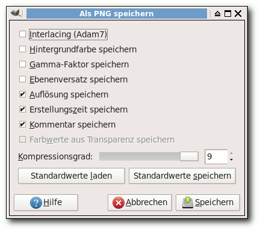
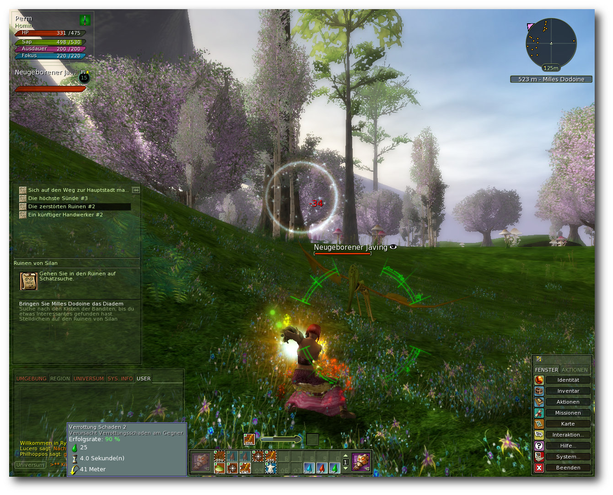

freiesMagazin Mai 2011 (ISSN 1867-7991)
Topthemen dieser Ausgabe
Python-Programmierung: Teil 7 – Iteratoren
Im vorherigen Teil dieser Reihe wurde eine kleine Musikdatenbank implementiert. Diese ist nun in der Lage, Verzeichnisse nach Musikdateien zu durchforsten und diese in eine SQLite-Datenbank abzulegen. Außerdem kann diese Datenbank natürlich durchsucht werden. In diesem Teil werden nun Iteratoren behandelt – und damit eine Technik, die zu den zentralen Konzepten von Python gezählt werden kann. (weiterlesen)
Dateigrößenoptimierung von Bildern
In Zeiten von Breitbandanschlüssen mit über 16 MBit machen sich nur noch wenige Menschen Gedanken über die Größe von Inhalten, die sie ins Netz stellen bzw. per E-Mail verschicken. Leider wird dabei oft vergessen, dass nicht jeder mit einem DSL-Anschluss gesegnet ist. Vor allem in ländlichen Gegenden ist es keine Seltenheit, dass man auf einen Surfstick angewiesen ist, der dann mit seinen 64 kbit/s an die gute alte ISDN-Zeit erinnert. Der Artikel soll zeigen, wie man Bilder so optimieren kann, dass diese platzsparender gespeichert werden können, ohne dabei aber zu viel Qualität zu verlieren. (weiterlesen)
Ryzom – Das freie MMORPG
Bereits 2005 öffnete mit „The Saga of Ryzom“ ein Online-Rollenspiel der etwas anderen Art seine Pforten. Statt Orks, Elfen, Goblins oder Drachen erwartete den Spieler der Zauber einer neuen Welt, mit eigenen Gesetzen, Regeln, einem ausgeklügelten Fertigkeiten- und innovativen Kampfsystem. Mittlerweile im Quellcode unter den Bedingungen der AGPLv3 verfügbar und auch für Linux freigegeben, ist es auch für die Nutzer des offenen Betriebssystems interessant. Doch taugt das Spiel etwas und wenn ja, warum ist es nicht weiter verbreitet? (weiterlesen)
Zum Index
Inhalt
Linux allgemein
Was Natty antreibt: Ein Blick auf den Kernel von Ubuntu 11.04
Der April im Kernelrückblick
Anleitungen
Python-Programmierung: Teil 7 – Iteratoren
Parallelisierung mit Scala
Dateigrößenoptimierung von Bildern
Wurmkur ohne Nebenwirkung – Virenentfernung mittels LiveCDs
Software
Ryzom – Das freie MMORPG
Zehn Jahre Warenwirtschaft C.U.O.N.
Community
Rezension: Coding for Fun mit Python
Magazin
Editorial
Leserbriefe
Veranstaltungen
Vorschau
Konventionen
Impressum
Zum Index
Editorial
Reine Konsumgesellschaft?Ende des Grafikwettbewerbs
An dieser Stelle würden wir gerne verkünden, dass der Grafikwettbewerb, den wir zum fünften Geburtstag von freiesMagazin gestartet haben [1], ein voller Erfolg war. Der Konjunktiv des Satzes deutet es aber an: Er war es nicht! Wir wollten mit dem Wettbewerb allen Lesern etwas zum Mitmachen bieten, die nicht gut schreiben oder gut programmieren können und sich sonst nicht angesprochen fühlten. freiesMagazin hat um die zehntausend Leser jeden Monat und dennoch hat es gerade einmal einer (der dazu auch noch ab und an als Autor tätig ist) geschafft, ein Bild zu unserem Geburtstag zu erstellen [2]. Im Endeffekt erleichtert uns das aber die Wahl eines Gewinners, sodass Herr Michael Schwarz mit eindeutiger Mehrheit den ersten Platz des Grafikwettbewerb einnehmen konnte. Das heißt, er erhält einen 30-Euro-Gutschein von Amazon und darüber hinaus die CD von „The Nuri“ als kleinen Bonus. Herzlichen Glückwunsch! Natürlich stellt sich uns dabei aber auch die Frage, ob die Linux- und Open-Source-Community zu einer reinen Konsumgesellschaft verkommt, sodass man selbst nur noch konsumiert, aber nichts mehr beiträgt. Dieser Trend zeichnet sich bereits seit einigen Monaten ab, da sich immer weniger Autoren melden, um Beiträge für freiesMagazin beizusteuern. Die Frage ist: Woran liegt das? Wenn Sie eine Theorie haben, schreiben Sie uns Ihre Meinung unterPython-Sonderausgabe
Auf den Wunsch der Leser hin haben wir alle bisher erschienen Python-Programmier-Artikel in einer Sonderausgabe zusammengefasst [3]. In dieser findet man die sechs Artikel von Daniel Nögel, die in den freiesMagazin-Ausgaben Oktober 2010 bis März 2011 erschienen sind. Auf die Art kann jeder Python-interessierte Neuling die ersten Schritte in der Python-Welt wagen und lernt so neben den Grundstrukturen und Elemente der Sprache in den fortgeschrittenen Teilen auch die Anbindung an eine Datenbank, um eine Musikverwaltung aufzubauen. Und nun wünschen wir Ihnen viel Spaß mit der neuen Ausgabe. Ihre freiesMagazin-Redaktion Links[1] http://www.freiesmagazin.de/20110318-grafikwettbewerb-zum-fuenften-geburtstag
[2] http://www.freiesmagazin.de/20110430-gewinner-des-grafikwettbewerbs
[3] http://www.freiesmagazin.de/freiesMagazin-2011-04-02
Das Editorial kommentieren
Zum Index
Was Natty antreibt: Ein Blick auf den Kernel von Ubuntu 11.04
von Mathias Menzer Die neueste Version von Ubuntu wurde nach etwa einem halben Jahr Entwicklungszeit vor kurzem veröffentlicht [1]. Insbesondere die Änderungen an der grafischen Oberfläche der Standardumgebung wurden kontrovers diskutiert und standen im Rampenlicht von Blogs und Nachrichtenseiten [2]. Doch auch im Kern gibt es einige Neuerungen seit Ubuntu 10.10 „Maverick Meerkat“ veröffentlicht wurde. Zeit also, einen Blick auf den Kernel zu werfen, der in Ubuntu 11.04 „Natty Narwhal“ steckt. Redaktioneller Hinweis: Der Artikel „Was Natty antreibt: Ein Blick auf den Kernel von Ubuntu 11.04“ erschien erstmals in Ikhaya [3] und wird mit Genehmigung des Autors unter der Creative Commons BY-SA 3.0 Unported [4] veröffentlicht.Die Qual der Kernelwahl
Es war lange Zeit nur „wahrscheinlich“, dass 2.6.38 in den jüngsten Spross der Ubuntu-Familie einziehen sollte. Bereits Ende Januar wurde der Kernel in Natty auf die Entwicklerversion 2.6.38 umgestellt und mittlerweile von den Kernel-Entwicklern als stabile Version veröffentlicht. Der Sprung über drei Kernel-Versionen (2.6.36, .37 und .38) hinweg muss nicht immer gleich eine Verheißung auf weltbewegende Neuerungen sein, aber den einen oder anderen Leckerbissen hat der Natty-Kernel dann doch zu bieten. Zu den Funktionen, die beim Arbeiten an einem Desktop-PC oder Notebook auffallen, werden in jedem Fall die automatischen Task-Gruppen zählen. Diese Funktion verbessert das Antwortverhalten, wenn der Rechner unter hoher Last steht, indem die zur Verfügung stehenden Prozessorressourcen gleichmäßig auf Prozess-Gruppen verteilt werden. Diese sind nach dem Terminal sortiert, von dem aus sie ausgeführt werden. So erhält zum Beispiel ein Kompilierungsvorgang mit vielen Prozessen die gleiche Priorität wie ein Web-Browser oder E-Mail-Programm.Fanotify kommt, BKL geht
Mehr im Hintergrund, letztlich jedoch mit positiven Auswirkungen auf die Leistungsfähigkeit des Rechners, wurde der Big Kernel Lock (BKL) [5] entfernt. Dieser Locking-Mechanismus gilt als besonders uneffektiv, da er den gesamten Kernel sperrt und wurde daher durch weniger gierige Locking-Mechanismen ersetzt. Dieses Projekt zog sich nun fast drei Jahre hin, in denen nach und nach alle Stellen, an denen der BKL zum Einsatz kam, überarbeitet wurden. Bereits seit 2.6.37 war es möglich, den Kernel ohne BKL-Unterstützung zu installieren, da nur noch wenige Treiber, wie zum Beispiel der Intel-Treiber i810, auf den BKL-Code angewiesen waren. Mit dem Natty-Kernel (2.6.38) ist BKL weitgehend passé und bereits in der Standard-Konfiguration deaktiviert. Der Code für den Lock wird jedoch erst mit dem Linux-Kernel 2.6.39 verschwinden, der sich derzeit in der Entwicklung befindet. Ein neues Benachrichtigungssystem für Dateisysteme ist Fanotify. So, wie der Nutzer durch die Notifications [6] auf dem Laufenden gehalten wird, wann immer Anwendungen Neuigkeiten zu vermelden haben, können sich Programme über Änderungen am Dateisystem informieren lassen. In diesem Punkt stellt Fanotify eine Ablösung für inotify [7] dar, geht aber noch einen Schritt weiter: Es kann auf eine Antwort des benachrichtigten Programms warten und einen Prozess so lange blockieren. Damit können zum Beispiel On-Access-Virenscanner [8] Dateien noch schnell prüfen, bevor sie gelesen oder ausgeführt werden, wie dies auf Windows-Systemen bereits gang und gäbe ist. Künftig können Virenscanner unter Linux auf diese einheitliche Schnittstelle zurückgreifen, bislang nutzen diese meist das (derzeit nicht gepflegte) Kernel-Modul Dazuko [9] oder verzichten auf eine Echtzeitprüfung.Weitere Änderungen und Verbesserungen
Weitere Änderungen, die beim Umgang mit dem Linux-Desktop zum Tragen kommen, sind zum Beispiel der Einsatz von FS-Cache im Zusammenhang mit Windows-Freigaben. FS-Cache ist ein Zwischenspeicher für Netzwerkdateisysteme, der nun auch den Zugriff auf Windows-Freigaben mittels CIFS [10] beschleunigt. Verbesserungen an der Virtuellen Speicherverwaltung [11] sollen scheinbar eingefrorenen Systemen vorbeugen, die zum Beispiel bei Schreibvorgängen auf langsame USB-Geräte auftreten, wenn der zur Verfügung stehende Arbeitsspeicher ausgelastet ist – im Zeitalter von Netbooks mit teilweise nur 1 GB vorinstalliertem RAM ein nicht allzu fern liegendes Szenario. Wird ein Rechner in den Ruhezustand versetzt, so sichert er ein Abbild des Speichers auf Festplatte, um später wieder im gleichen Zustand aufwachen zu können. Dieses wird nun mittels LZO [12] komprimiert. LZO gilt zwar nicht gerade als der effizienteste Algorithmus, um eine hohe Kompressionsrate zu erzielen, punktet jedoch bei der Geschwindigkeit, mit der die Komprimierung und Dekomprimierung vonstatten gehen und somit auch bei der Zeit, die zum Einschlafen und Aufwachen benötigt wird. Und zuletzt kann Ubuntu 11.04 bereits mit AMDs neuester Generation von Chipsätzen umgehen, da Nattys Kernel Unterstützung für die Fusion-Plattform [13] bietet, die Prozessor und Grafikkern auf einem Chip vereinen. Erste Geräte mit diesen Chips wurden zum Beispiel von Acer und MSI angekündigt und dürften in Kürze im Handel auftauchen.Fazit
Dies war nur ein kurzer Abriss der wichtigsten Neuerungen, die nicht nur irgendwo im Dunkeln dämmern, sondern für den Nutzer am Desktop greifbar sind. Darüber hinaus wurden im Hintergrund unter anderem Verbesserungen an den Werkzeugen zur Leistungsmessung des Kernels vorgenommen, mit deren Hilfe die Entwickler bewerten können, wo die Bremsen im System sitzen und wo optimiert werden kann. Mit B.A.T.M.A.N. [14] wurde ein neues Routingprotokoll für vermaschte drahtlose Netze [15] aufgenommen, das unter anderem nach Naturkatastrophen zum Einsatz kommen kann, um wieder Kommunikationsmöglichkeiten zu schaffen. Dabei ist jeder Teilnehmer am Netz nicht nur Endpunkt sondern auch Teil der Verbindung zu Anderen oder kann als Zugangspunkt zum Beispiel per Satellitenfunk zum Internet dienen. Der Nutzerkreis dürfte zwar eher eingeschränkt sein, nichtsdestotrotz handelt es sich um eine interessante Technik. Das bereits von Ubuntu genutzte AppArmor [16], ein System, das die Berechtigungen von Prozessen beschränken und damit die Sicherheit des Systems gegenüber eingeschleustem Code verbessern soll, ist jetzt nun offiziell Bestandteil des Linux-Kernels. AppArmor muss nun nicht mehr von den Distributionen selbst eingefügt werden, was diesen einigen Aufwand abnimmt, letztlich für den Nutzer jedoch keinen Unterschied macht. Links[1] http://ikhaya.ubuntuusers.de/2011/04/28/ubuntu-11-04-natty-narwhal-ist-erschienen/
[2] http://kofler.info/blog/154/126/Unity----Der-Anfang-vom-Ende-fuer-Ubuntu/
[3] http://ikhaya.ubuntuusers.de
[4] http://creativecommons.org/licenses/by-sa/3.0/deed.de
[5] https://secure.wikimedia.org/wikipedia/de/wiki/Big_Kernel_Lock
[6] http://wiki.ubuntuusers.de/Benachrichtigungsdienst
[7] http://wiki.ubuntuusers.de/inotify
[8] https://secure.wikimedia.org/wikipedia/de/wiki/Antivirenprogramm#Echtzeitscanner
[9] https://secure.wikimedia.org/wikipedia/de/wiki/Dazuko
[10] https://secure.wikimedia.org/wikipedia/de/wiki/Server_Message_Block
[11] https://secure.wikimedia.org/wikipedia/de/wiki/Virtuelle_Speicherverwaltung
[12] https://secure.wikimedia.org/wikipedia/de/wiki/Lempel-Ziv-Oberhumer
[13] https://secure.wikimedia.org/wikipedia/en/wiki/AMD_Fusion
[14] https://secure.wikimedia.org/wikipedia/de/wiki/B.A.T.M.A.N.
[15] https://secure.wikimedia.org/wikipedia/de/wiki/Vermaschtes_Netz
[16] http://wiki.ubuntuusers.de/AppArmor
| Autoreninformation |
| Mathias Menzer (Webseite) hält einen Blick auf die Entwicklung des Linux-Kernels. Als Nutzer eines (fast) unmodifizierten Ubuntu-Desktops interessiert er sich besonders dafür, was für ihn als Anwender bei all der Entwicklung relevant ist. |
Zum Index
Der April im Kernelrückblick
von Mathias Menzer Basis aller Distributionen ist der Linux-Kernel, der fortwährend weiterentwickelt wird. Welche Geräte in einem halben Jahr unterstützt werden und welche Funktionen neu hinzukommen, erfährt man, wenn man den aktuellen Entwickler-Kernel im Auge behält. Das Fenster für die Aufnahme von Neuerungen in den Linux Kernel 2.6.39 wurde bereits Ende März mit Erscheinen der ersten Vorabversion [1] geschlossen. Ein alter Bekannter hat uns verlassen: Nachdem der Big Kernel Lock zuletzt nur noch wenigen Treibern vorbehalten und in der Standardkonfiguration abgeschaltet war, verschwindet er mit den Worten „Total BKL removal, finally“ („vollständiges Entfernen des BKL, endlich“; Betreff der E-Mail an die Linux Kernel Mailing List [2]) nun endgültig aus dem Kernel. Damit geht ein fast drei Jahre dauerndes Projekt zu Ende, das Ingo Molnar im Mai 2008 gestartet hatte [3]. Das Ergebnis ist ein Kernel, dessen Bestandteile nun auf Mehrprozessorsystemen besser skalieren als dies bislang der Fall war. Weiterhin wurde das „Block Device Plugging“ umgestellt, sodass dieses nun auf Threads bezogen ausgeführt wird, nicht wie zuletzt gerätebezogen, wodurch sich Aufrufe effizienter nutzen lassen. Als angenehmer Nebeneffekt wurde der Quellcode dabei aufgeräumt. Plugging und Unplugging bezeichnen das Deaktivieren bzw. Aktivieren des Treibers eines Block-orientierten Gerätes beziehungsweise seiner zugehörigen Warteschlange. 2.6.39-rc2 [4] wurde von Torvalds selbst als „ungewöhnlich ruhig“ bezeichnet, konnte aber dennoch einen neuen Treiber für LGs USB-LTE-Modem VL600 wie auch noch Neuerungen am Wacom-Treiber, der Zwei-Finger-Gesten an Multitouch-Tablets ermöglichen soll, vorweisen. Die dritte Vorabversion [5] brachte auf den ersten Blick zwar große Änderungen, diese waren jedoch auf eine automatisierte Rechtschreibkorrektur hauptsächlich der Dokumentation und der Kommentare im Kernel-Code zurückzuführen. In über 2400 Dateien wurden Fehler wie zum Beispiel „Maintainence“ statt „Maintenance“ behoben, was damit über 90 % der Dateien betraf. Die Änderungen am Block Layer Plugging sorgten auch für verschiedene Probleme, die mit dem -rc4 [6] teilweise behoben werden konnten. Ein verbliebener Effekt, der einen stetigen Strom von Meldungen über einen – imaginären – Wechsel der CD-ROM erzeugte, wurde mit dem -rc5 [7] beseitigt. Darin enthalten waren dann ebenfalls neue Geräte-IDs für Intels kommende Chipsatz-Generation „Panther Point“, die erstmals USB 3.0 ohne Zusatzchip unterstützen werden.|
Kurz erläutert: „Big Kernel Lock (BKL)“ Der Big Kernel Lock ist ein Mechanismus, mit dem verhindert wird, dass von mehreren Prozessoren oder Kernen der gleiche Kernel-Code gleichzeitig ausgeführt wird. Dieser Sperr-Mechanismus wurde beim Übergang zu Linux 2.2 1996 eingeführt, um Mehrprozessor-Systeme effektiver nutzen zu können. Er war von Anfang an als zeitweilige Lösung gedacht, bis bessere Mechanismen ein feineres Locking erlauben würden, da der BKL nicht nur Teile, sondern gleich den ganzen Kernel sperrt. Mittlerweile stehen Mechanismen zur Verfügung, die nur kleine Teile des Kernel sperren, wodurch die anderen, nicht gesperrten Bereiche weiterhin zugriffsbereit bleiben und eine wesentlich bessere Nutzung mehrerer vorhandener Prozessoren erreicht wird. |
Links
[1] http://lkml.org/lkml/2011/3/29/351
[2] http://lkml.org/lkml/2011/3/16/420
[3] http://lkml.org/lkml/2008/5/14/324
[4] http://lkml.org/lkml/2011/3/29/351
[5] http://lkml.org/lkml/2011/4/11/378
[6] http://lkml.org/lkml/2011/4/19/6
[7] http://lkml.org/lkml/2011/4/27/8
| Autoreninformation |
| Mathias Menzer (Webseite) hält einen Blick auf die Entwicklung des Linux-Kernels. Dafür erfährt er frühzeitig Details über neue Treiber und interessante Funktionen. |
Zum Index
Python-Programmierung: Teil 7 – Iteratoren
von Daniel Nögel Im vorherigen Teil wurde eine kleine Musikdatenbank implementiert (siehe freiesMagazin 03/2011 [1]). Diese ist nun in der Lage, Verzeichnisse nach Musikdateien zu durchforsten und diese in eine SQLite-Datenbank abzulegen. Außerdem kann diese Datenbank natürlich durchsucht werden. In diesem Teil werden nun Iteratoren behandelt – und damit eine Technik, die zu den zentralen Konzepten von Python gezählt werden kann.Nachtrag
Im letzten Teil wurde gefragt, wie die Shuffle-Methode unter Zuhilfenahme von SQL zu verbessern sei. Dazu ist die Klasse DatabaseConnector schlicht um diese Methode zu erweitern:
def shuffle(self, num):
sql = "SELECT * FROM mp3s ORDER BY RANDOM() LIMIT {0}".format(num)
with Cursor(self.connection) as cursor:
return cursor.execute(sql).fetchall()
Mit der Anweisung ORDER BY RANDOM() werden die Einträge in der
Tabelle mp3s in zufälliger Reihenfolge geordnet. Die Anweisung
LIMIT {ZAHL} sorgt dafür, dass nur eine gegebene Anzahl von
Einträgen ausgelesen wird.
Anschließend muss noch der Aufruf der Zufallsroutine im Skript
umgebogen werden. Dazu wird der Teil
songs = database.get_all_songs() shuffle(songs) songs = songs[:options.shuffledurch diese Zeile ersetzt:
songs = database.shuffle(options.shuffle)Eine weitere Anmerkung im vorherigen Teil zielte auf den Generator-Ausdruck in der Funktion generate_simple_playlist():
u"\n".join(hit["path"] for hit in songs)Es wurde bereits angemerkt, dass es sich hierbei um eine sehr effiziente Alternative zu folgendem Code handelt:
paths = [] for hit in songs: paths.append(hit["song"]) return u"\n".join(paths)Um aber genau zu klären, was es mit Generator-Ausdrücken auf sich hat, sollen in diesem Teil zunächst „klassische“ Iteratoren vorgestellt werden. Im nächsten Teil kommen dann Iterator- und Generator-Ausdrücke zur Sprache.
Iteratoren
Schon in den vorherigen Teilen dieser Einführung wurde mehrfach das Verb „iterieren“ verwendet. Mit Hilfe der for-Schleife wurde beispielsweise über eine Liste „iteriert“. Wie bereits zuvor erörtert wurde, werden beim Iterieren letztlich bestimmte Datenstrukturen schrittweise durchlaufen. Es wird beispielsweise nacheinander auf die Elemente einer Liste zugegriffen. Iteratoren in Python sind letztlich nichts anderes als ein einheitlicher Standard, mit dem Objekte um diese Funktionalität erweitert werden können.class TestIterator(object): def __iter__(self): self.current = 1 return self def next(self): self.current += 1 return self.current for i in TestIterator(): print iDie beiden Methoden __iter__() und next() gehören zu diesem Iterator-Standard (allgemein spricht man vom „Iterator-Protokoll“). Die Methoden lassen sich wie folgt erklären. In der for-Schleife wird zunächst eine Instanz von TestIterator erzeugt. Beim Versuch über ein Objekt zu iterieren, wird nun zunächst die __iter__()-Methode des gegebenen Objektes aufgerufen. Hat das Objekt keine solche Methode, wird beim Versuch über das Objekt zu iterieren ein Fehler ausgegeben:
>>> for i in 4: ... print i Traceback (most recent call last): File "<stdin>", line 1, in <module> TypeError: 'int' object is not iterableDiese Methode __iter__() leitet die Iteration also letztlich ein. Ihre Aufgabe ist es, ein Objekt zurückzugeben, über das iteriert werden soll. Das könnte beispielsweise eine Liste sein. Da hier ein eigenständiger Iterator umgesetzt werden soll, gibt __iter__() mit self schlicht eine Referenz auf die aktuelle TestIterator-Instanz zurück. Nun beginnt das eigentliche Iterieren: Die for-Schleife ruft für jeden Schleifendurchgang die next()-Methode des von __iter__() zurückgegebenen Objektes auf – in diesem Fall also die next()-Methode von TestIterator. Der Rückgabewert von next() wird in diesem Beispiel jeweils an den Namen i gebunden und steht damit im Schleifenrumpf zur Verfügung. Achtung: Es ist die Aufgabe des Iterators, bei jedem Aufruf von next() den internen Zähler (hier: self.current) zu erhöhen. Beim Ausführen des obigen Beispiels wird schnell deutlich, dass TestIterator() in Einerschritten hochzählt. Die einzige Möglichkeit, das Skript zu unterbrechen, ist ein beherzter Griff zu „Strg“ + „C“. Wie lassen sich nun Abbruchbedingungen implementieren? Es gibt zwei Möglichkeiten, dieses Problem zu lösen. Zum einen könnte in der Schleife selbst eine Abbruchbedingung formuliert werden:
for i in TestIterator(): print i if i >= 1000: breakSchon bricht die Schleife ab, sobald i >= 1000 ist. Zum anderen aber kann das Iterator-Objekt auch selbst anzeigen, dass die Iteration beendet ist. Dies ist beispielsweise bei Listen sinnvoll. Wenn eine Liste keine weiteren Elemente mehr enthält, muss der for-Schleife irgendwie angezeigt werden, dass die Iteration beendet ist. Dazu gibt es die StopIteration-Exception:
class TestIterator(object): def __iter__(self): self.current = 1 return self def next(self): if self.current >= 1000: raise StopIteration self.current += 1 return self.current for i in TestIterator(): print iHier wurde die Methode next() nun so erweitert, dass die Exception StopIteration geworfen wird, sobald der interne Zähler (self.current) einen Wert größer oder gleich 1000 annimmt. Zum Auslösen dieses „Fehlers“ wird das Schlüsselword raise eingesetzt. Keine Sorge: Wenngleich hier von Fehler oder Exception gesprochen wird, dient StopIteration lediglich dazu, das Ende der Iteration auszulösen.
Kurzes Zwischenfazit
Bisher wurden drei wichtige Elemente des Iterator-Protokolls vorgestellt: Die Methode __iter__() wird zu Beginn der Iteration ausgeführt und muss ein iterierbares Objekt zurückgeben. Dieses iterierbare Objekt muss wiederum eine Methode next() implementieren. Diese Methode wird bei jedem Schleifendurchlauf ausgeführt, ihr Rückgabewert ist der aktuelle Wert des Iterators. Schließlich wurde die Exception StopIteration vorgestellt. Sie wird geworfen, wenn der Iterator anzeigen soll, dass keine weiteren Werte zur Verfügung stehen. Die for-Schleife, mit der über den Iterator iteriert wird, endet in diesem Fall.Viele Wege führen nach Rom
Neben Iteratoren, die mit __iter__() und next() arbeiten, gibt es noch eine zweite Möglichkeit, Iteratoren zu erstellen. Für diesen zweiten Fall wird lediglich die Methode __getitem__() benötigt. Diese Methode kommt für gewöhnlich bei der Nutzung des Listen-Operators zum Einsatz.>>> numbers = [1, 2, 3] >>> numbers[0] 1Der Ausdruck numbers[0] macht dabei nichts anderes, als die Methode __getitem__() der bezeichneten Liste aufzurufen:
>>> numbers.__getitem__(0) 1Es wird auch deutlich, dass __getitem__() einen Parameter kennt, der den jeweiligen Listenindex (hier: 0) bezeichnet. Python ist nun in der Lage, auch Objekte, die nur die Methode __getitem__() implementieren, wie Iteratoren zu behandeln. Ein Beispiel:
class AnotherIterator(object): def __getitem__(self, item): if item > 1000: raise IndexError return item for i in AnotherIterator(): print iIm Unterschied zur __iter__()/next()-Variante muss der Iterator aber hier nicht unbedingt einen internen Zähler mitführen: Bei jedem Schleifendurchlauf wird nämlich der Methode __getitem__() ein Indexwert (hier: item) übergeben, der letztlich nichts anderes als die Nummer des jeweiligen Schleifendurchlaufs repräsentiert. Es gibt noch einen weiteren Unterschied: Statt einer StopIteration-Exception, wirft der __getitem__()-Generator einen IndexError. Das hängt damit zusammen, dass auch Listen einen IndexError werfen, wenn über __getitem__() ein Index ausgelesen werden soll, der größer ist, als die Zahl der Einträge der Liste.
Beispiel
Bereits in einem der ersten Teile dieser Einführung (siehe freiesMagazin 10/2010 [2]) wurde die Funktion range() besprochen. In Python 2.x wird damit eine Liste im angegebenen Wertebereich erstellt. Ab Python 3.x erzeugt die Funktion range() keine Liste mehr, sondern einen Iterator. Zwar lässt sich über beide Objekte gleichermaßen iterieren, die Iterator-Variante hat aber den Vorteil, dass keine „Wegwerf-Liste“ erzeugt wird, über welche dann doch nur ein Mal iteriert wird. Weiterhin ist der Generator speichereffizenter: Während in Python 2.x range(0, 1000) zunächst eine Liste mit 1000 Integer-Werten erstellen muss, die ca. 16.000 Byte Speicher benötigt, belegt der durch range(0, 1000) in Python 3.x erzeugte Iterator gerade einmal 20 Bytes im Speicher (Angaben jeweils für ein 32-Bit-Python). Im Folgenden wird ein solcher range()-Iterator auch für Python 2.x erstellt. Dabei kommen die beiden oben erörterten Varianten zum Einsatz:class RangeIterator(object): def __init__(self, start, step, stop=None): self.start = start-step self.step = step self.stop = stop def __iter__(self): self.current = self.start return self def next(self): self.current += self.step if self.stop and self.current >= self.stop: raise StopIteration return self.currentDie Syntax dieses Iterators unterscheidet sich etwas von der Syntax der range()-Funktion. Das soll an dieser Stelle aber nicht weiter stören. Ein Aufruf könnte wie folgt aussehen:
for i in RangeIterator(0, 2, 10): print iMit diesem Aufruf werden also von 0 beginnend alle Zahlen bis 10 in Zweierschritten ausgegeben. Würde kein Parameter für stop angegeben, würde der Iterator beliebig viele Zahlen in Zweierschritten ausgeben. Wesentlich zum Verständnis sind – wie nicht anders zu erwarten – die Methoden __iter__() und next(). Dadurch, dass erst in __iter__() der Wert von self.current auf den Anfangswert gesetzt wird, ist jede Instanz des Iterators letztlich wiederverwertbar: Bei einem zweiten Einsatz in einer anderen Schleife würde wieder zunächst die Methode __iter__() aufgerufen werden, sodass der gewünschte Anfangswert erneut gesetzt würde. Bei jedem einzelnen Schleifendurchlauf wird dann die Methode next() aufgerufen. Hier wird zunächst der aktuelle Wert um self.step erhöht und dann überprüft, ob ein Maximalwert self.stop gesetzt und erreicht wurde. In diesem Fall wird die Exception StopIteration geworfen. Andernfalls wird der aktuelle Wert mittels return zurückgegeben. Die gleiche Funktionalität wird nun mit einem Iterator mit __getitem__()-Methode implementiert:
class RangeIterator2(object): def __init__(self, start, step, stop=None): self.start = start self.step = step self.stop = stop def __getitem__(self, num): cur_value = self.step * num + self.start if self.stop and cur_value >= self.stop: raise IndexError return cur_valueDer Aufruf mit
for i in RangeIterator2(0, 2, 10): print iführt zum gleichen Ergebnis wie oben. Allerdings wirkt der Iterator etwas kompakter. Weil der jeweilige Schleifendurchlauf beim Aufruf von __getitem__() als Parameter num übergeben wird, kann der jeweils gewünschte Wert „aus dem Stand“ berechnet werden, es ist also kein Klassenattribut wie self.current nötig, das den Wert zwischenspeichert. Diese Variante hat noch einen anderen interessanten Vorteil gegenüber der ersten Variante des Iterators, denn es lassen sich gezielt bestimmte „Positionen“ im Iterator ansprechen:
>>> print RangeIterator2(0, 2, 999)[55] 110Das macht diese Form eines Iterators besonders interessant für Anwendungsfälle, in denen Berechnungen für bestimmte Indizes nicht sukzessiv aufeinander aufbauen, sondern jeweils eigenständig erfolgen können.
Fazit
Vorgestellt wurden zwei Varianten, einen eigenen Iterator zu implementieren. Tatsächlich handelt es sich aber hierbei in erster Linie um die Möglichkeit, ein eigenes Objekt um diese Funktionalität zu erweitern. Wer also beispielsweise eine Welt-Klasse hat, möchte diese eventuell um die Möglichkeit erweitern, über die Welt zu iterieren und dabei alle Länder auszugeben. Für viele Anwendungsfälle ist das Erstellen von Iteratorklassen aber sehr umständlich und letztlich auch überflüssig: Mit Iterator- und Generator-Ausdrücken sowie mit Generator-Funktionen lassen sich in Python sehr schnell und einfach Iteratoren implementieren. Der Betrachtung dieser Techniken widmet sich der folgende achte Teil dieser Reihe. Links[1] http://www.freiesmagazin.de/freiesMagazin-2011-03
[2] http://www.freiesmagazin.de/freiesMagazin-2010-10
| Autoreninformation |
| Daniel Nögel (Webseite) beschäftigt sich seit drei Jahren mit Python. Ihn überzeugt besonders die intuitive Syntax und die Vielzahl der unterstützten Bibliotheken, die Python mitbringt. |
Zum Index
Parallelisierung mit Scala
von Stefan Bradl Viele Programmierer haben Probleme mit der Programmierung von Nebenläufigkeit [1] [2]. Aufgrund der aktuellen Entwicklung der Hardware ist dies ein großer Nachteil. Durch die Nutzung der Programmiersprache Scala, welche Nebenläufigkeit mittels des Actor-Modells auf einem sehr hohen Abstraktionsniveau unterstützt, kann dieses Problem in vielen Fällen behoben werden. Dadurch können Programme geschrieben werden, welche gut skalieren [3] und somit die vorhandene Rechenleistung besser ausnutzen. Eine gute Einführung in die Programmiersprache bietet das, von O'Reilly per HTML zur Verfügung gestellte, Buch „Programming Scala“ [4]. Außerdem bietet die Webseite des Scala-Projekts viele weitere Informationen [5].Das Actor-Modell
Die meisten Programmierer verbinden nebenläufige Programme mit Threads [6], gemeinsam genutztem Speicher und vor allem mit viel Arbeit. Dazu gehören die Verwendung von Mutexen [7], Semaphoren [8], kritischen Abschnitten [9] und vielen weiteren. Auf diesem niedrigen Abstraktionsniveau ist die Programmierung nebenläufiger Programme tatsächlich ein sehr aufwändiges Unterfangen. In den meisten Anwendungen ist diese Arbeit jedoch nicht nötig, wenn man sich des Actor-Modells bedient. Das Grundprinzip, welches beim Actor-Modell angewendet wird, ist die Eliminierung gemeinsam genutzten Speichers. Dieser ist die Hauptursache der meisten Probleme, welche Programmierer mit Nebenläufigkeit in Verbindung bringen. Wenn zwei Programmteile allerdings auf die selben Daten zugreifen wollen, wie kann man dann diesen Zugriff ohne die Verwendung eines Mutex bewerkstelligen? Dazu stelle man sich eine Anwendung für eine Bank vor. Um Fehler innerhalb der Bankkonten zu vermeiden, muss sichergestellt werden, dass nur ein einziger Vorgang zu einer bestimmten Zeit ausgeführt wird. Gibt es also zwei Kunden, welche jeweils eine Überweisung vornehmen, so sorgt die Implementation des Actor-Modells dafür, dass die Transaktionen nacheinander durchgeführt werden. Wenn beide Kunden auf das Konto des jeweils anderen diese Überweisung vornehmen, so kann es vorkommen, dass die Abbuchung bei dem ersten Kunden zu demselben Zeitpunkt stattfindet wie die Gutschrift. Dadurch kann der Kontostand fehlerhaft sein. Nun stelle man sich vor, dass die zwei Kunden nicht direkt auf ihre Konten zugreifen, sondern der Bank mitteilen, was sie tun wollen. Der erste Kunde sendet also eine Nachricht an die Bank, dass er einen bestimmten Betrag von seinem Konto auf das Konto des zweiten Kunden überweisen möchte. Der zweite Kunde verfährt analog. Die zwei Nachrichten kommen nun im Briefkasten der Bank an. Dort werden sie von einem Mitarbeiter der Reihe nach bearbeitet. Die Vorgänge werden also nacheinander ausgeführt, wodurch der oben besprochene Fehler nicht auftreten kann. Genau diesen Ansatz des Nachrichtenaustauschs verfolgt das Actor-Modell. Die zwei Kunden und die Bank werden als die Akteure bezeichnet. Jeder dieser Akteure besitzt seinen eigenen Briefkasten. Die Nachrichten, die sich die Akteure zusenden, werden im Briefkasten des jeweiligen Empfängers abgelegt.Actors in Scala
In der Programmiersprache Scala ist das Actor-Modell bereits integriert. Man muss lediglich die Akteure und das Senden bzw. Empfangen der Nachrichten implementieren. Um einen Akteur zu generieren, wird zuerst eine Klasse erstellt, welche von der Klasse Actor abgeleitet wird. Um diese Basisklasse zu nutzen, werden zusätzlich noch die zwei Pakete scala.actors.Actor und scala.actors.Actor._ importiert. Die eigentliche Arbeit erledigen die Akteure in der Methode act(). In den meisten Anwendungsfällen besteht diese Methode aus einer Schleife, in der die eingehenden Nachrichten abgearbeitet werden. Als Abkürzung für while(true) kann loop verwendet werden. Um die einzelnen eingehenden Nachrichten zu unterscheiden, wird das sehr mächtige Sprachmittel der Mustererkennung (Pattern-Matching) verwendet. Das Grundgerüst könnte also wie folgt aussehen:
import scala.actors.Actor
import scala.actors.Actor._
object Bank extends Actor {
betrag: Int = 0
def act() {
loop {
react {
}
}
}
}
Listing: actor_basic.scala
Um Nachrichten zu definieren, gibt es in Scala verschiedene Möglichkeiten.
Der Einfachheit halber
werden hier die sogenannte Case-Klassen verwendet.
Für die
Beispielanwendung werden die Nachrichten Einzahlen und Abheben verwendet.
case class Einzahlen(betrag: Int) case class Abheben(betrag: Int)Damit die Bank auf diese Nachrichten reagieren kann, muss die Methode act angepasst werden:
react {
case e: Einzahlen => {
this.betrag += e.betrag
}
case a: Abheben => {
this.betrag -= a.betrag
}
}
Der gesamte Quelltext des Akteurs sowie ein Beispiel zu dessen Verwendung
ist im Folgenden zu sehen. Außer dem Einzahlen und Abheben werden an dieser
Stelle auch Nachrichten zum Abfragen des Kontostandes und zum Beenden
definiert.
import scala.actors.Actor
import scala.actors.Actor._
case class Einzahlen(betrag: Int)
case class Abheben(betrag: Int)
case object Kontostand
case object Stopp
object Bank extends Actor {
var betrag = 0
def act() {
loop {
receive {
case e: Einzahlen => {
this.betrag += e.betrag
}
case a: Abheben => {
this.betrag -= a.betrag
}
case Kontostand => {
reply(this.betrag)
}
case Stopp => exit()
}
}
}
}
Listing: Bank.scala
object Demo {
def main(args: Array[String]) {
Bank.start
println("Kontostand: " + (Bank !? Kontostand))
Bank ! Einzahlen(400)
println("Kontostand: " + (Bank !? Kontostand))
Bank ! Einzahlen(300)
Bank ! Abheben(200)
println("Kontostand: " + (Bank !? Kontostand))
Bank ! Stopp
}
}
Listing: Demo.scala
Durch die Verwendung von Case-Klassen wird automatisch einiger Quelltext
generiert, welcher es erlaubt, auf die Variable betrag zuzugreifen. Bevor
man einem Akteur eine Nachricht senden kann, muss dessen
Nachrichtenverarbeitung mittels der Methode start angestoßen werden. Für das
eigentliche Senden von Nachrichten gibt es mehrere Methoden. Im Beispiel
werden die Methoden ! und !? verwendet. Um eine Nachricht zu senden und
diese asynchron zu bearbeiten, wird ! verwendet. Erwartet man auf eine
Nachricht eine Antwort – wie bei der Abfrage des Kontostandes – so wird !?
benötigt. Hierbei wird eine Nachricht gesendet und auf das Ergebnis der
Abarbeitung gewartet. Das Ergebnis wird mit der Methode reply von der Bank
zurückgesendet. Es gibt noch weitere Möglichkeiten zum Senden von
Nachrichten, welche in der
API-Dokumentation [10]
nachgeschlagen werden können.
Das Beispiel zeigt auf einfache Weise, wie nebenläufig programmiert werden
kann, ohne sich darüber direkt Gedanken machen zu müssen. Natürlich bietet
das Beispiel nur einen kleinen Einblick in die Verwendung von Akteuren. Für
eine echte Anwendung würde der Quelltext aber sehr ähnlich aussehen. Man
könnte zum Beispiel Scalas RemoteActors verwenden. Mit diesen können
Akteure über ein Netzwerk miteinander Nachrichten austauschen. Auf einem
Server würde dann der Akteur für Bank laufen. Die Konteninhaber könnten dann
mit diesem Akteur kommunizieren. Selbst wenn mehrere Nachrichten zum selben
Zeitpunkt abgeschickt werden kommt es nicht zu Problemen. Der einzige
Speicherbereich, welcher von mehreren Threads gleichzeitig genutzt wird, ist
die Nachrichtenbox. Da diese durch das Actor-Modell verwaltet wird, wird dem
Programmierer viel Arbeit abgenommen. Man kann sich somit um das Wesentliche
kümmern.
Parallelisierung von Algorithmen
Mit den bisherigen Sprachmitteln ist es nur begrenzt möglich, Algorithmen zu parallelisieren. Ein einfacher und beliebter Algorithmus für Demonstrationszwecke ist die Berechnung der Fibonaccizahlen [11]. In Scala wird dieser wie folgt implementiert:
def fib(n: Int): Int = {
if ( n <= 0 ) 0
else if ( n == 1 ) 1
else fib(n - 1) + fib(n - 2)
}
Um diesen Algorithmus nebenläufig zu implementieren, muss man zuerst nach
Stellen im
Quelltext suchen, welche unabhängig voneinander abgearbeitet
werden können. Da der Algorithmus sehr übersichtlich ist, fällt die Suche
eher kurz aus. Die Berechnung der beiden Vorgänger ist ein guter Kandidat
für eine nebenläufige Abarbeitung.
Konkret bedeutet das, dass zwei Akteure erstellt werden müssen, von denen
jeder einen Vorgänger berechnet und das Ergebnis zurücksendet.
Verwendet man
dafür die Methode !?, ergibt sich ein Problem: Sendet man dem Akteur eine
Nachricht, so wird diese sofort behandelt und auf das Ergebnis gewartet. Das
heißt der zweite Vorgänger könnte nicht parallel zum ersten berechnet
werden. Für solche Fälle gibt es das Sprachmittel Future. Mit diesen ist
es möglich, die Antwort auf eine Nachricht erst zu einem späteren Zeitpunkt
abzuwarten. Um eine Nachricht an einen Akteur zu senden und ein
Future-Objekt zurückzuerhalten verwendet man die Methode !!.
Um nun die Berechnung der Fibonaccizahlen nebenläufig zu implementieren,
erstellt man zuerst eine Klasse namens Arbeiter. Diese wird von der Klasse
Actor abgeleitet. Da der Arbeiter eine bestimmte Fibonaccizahl berechnen
soll, muss er auf Nachrichten vom Typ Int reagieren. Um die Nachricht zu
bearbeiten, werden zuerst zwei neue Arbeiter benötigt. Diesen wird mittels
der Methode !! jeweils der zu berechnende Vorgänger zugesendet. Durch die
Verwendung von Futures kann man zu einem späteren Zeitpunkt auf die
Ergebnisse warten – nämlich nachdem beide Arbeiter ihre Nachrichten erhalten
haben. Die Ergebnisse werden dann einfach addiert und zurückgesendet.
class Arbeiter extends Actor {
def act() {
loop {
react {
case n: Int => {
if(n < 2) {
reply(fib.fib(n))
} else {
val arbeiter1 = new Arbeiter
val arbeiter2 = new Arbeiter
arbeiter1.start
arbeiter2.start
val future1 = arbeiter1 !! (n-1)
val future2 = arbeiter2 !! (n-2)
reply(future1().asInstanceOf[Int]
+ future2().asInstanceOf[Int])
}
exit()
}
}
}
}
}
Listing: Arbeiter.scala
Verwendet wird die Klasse, indem eine Instanz erzeugt wird. Anschließend
wird mit !? die zu berechnende Zahl an den Arbeiter gesendet und das
Ergebnis kann ausgegeben werden:
def main(args: Array[String]) {
val arbeiter = new Arbeiter
arbeiter.start
val ergebnis = (arbeiter !? args(0).toInt).asInstanceOf[Int]
println(ergebnis)
}
Fazit
Das Actor-Modell bietet eine sehr gute Möglichkeit zur Programmierung nebenläufiger Programme. Die Abstraktion geht dabei sogar soweit, dass der Programmierer nicht einmal mehr wissen muss, dass er etwas nebenläufig implementiert. Vielmehr bildet er nur die reale Welt nach, indem er Akteure und deren Kommunikation modelliert. Dazu kommt, dass Quelltexte in Scala zum Teil deutlich kürzer und aussagekräftiger sind als in Java. Außerdem können alle Java-APIs auch in Scala verwendet werden. Links[1] http://de.wikipedia.org/wiki/Nebenläufigkeit
[2] http://de.wikipedia.org/wiki/Parallele_Programmierung
[3] http://de.wikipedia.org/wiki/Skalierbarkeit
[4] http://programming-scala.labs.oreilly.com/index.html
[5] http://www.scala-lang.org/
[6] http://de.wikipedia.org/wiki/Thread\_(Informatik)
[7] http://de.wikipedia.org/wiki/Mutex
[8] http://de.wikipedia.org/wiki/Semaphor\_(Informatik)
[9] http://de.wikipedia.org/wiki/Kritischer\_Abschnitt
[10] http://www.scala-lang.org/api/current/index.html
[11] http://de.wikipedia.org/wiki/Fibonacci-Folge
| Autoreninformation |
| Stefan Bradl ist Informatikstudent an der Hochschule Zittau/Görlitz. Während seines Praktikums hat er sich mit der Programmiersprache Scala vertraut gemacht und seine Bachelorarbeit zum Thema „Parallelisierung funktionaler Programme“ geschrieben. |
Zum Index
Dateigrößenoptimierung von Bildern
von Dominik Wagenführ In Zeiten von Breitbandanschlüssen mit über 16 MBit machen sich nur noch wenige Menschen Gedanken über die Größe von Inhalten, die sie ins Netz stellen bzw. per E-Mail verschicken. Leider wird dabei oft vergessen, dass nicht jeder mit einem DSL-Anschluss gesegnet ist. Vor allem in ländlichen Gegenden ist es keine Seltenheit, dass man auf einen Surfstick angewiesen ist, der dann mit seinen 64 kbit/s an die gute alte ISDN-Zeit erinnert. Der Artikel soll zeigen, wie man Bilder so optimieren kann, dass diese platzsparender gespeichert werden können, ohne dabei aber zu viel Qualität zu verlieren.Vorwort
Zuerst sei gesagt, dass es Optimierungen ohne Qualitätsverlust nur selten gibt. Zwar gibt es so etwas wie verlustfreie Komprimierung, aber auch diese hat ihre Grenzen und kann nicht bei jedem Bild gleich gut wirken. Für den Artikel wird der Einfachheit halber GIMP als Programm für die Umsetzung der Optimierungen herangezogen, da es auf den meisten Systemen leicht installiert werden kann. Die Optimierungen können aber mit jedem Programm vollzogen werden, das diese Optimierungstechniken beherrscht.Rastergrafik vs. Vektorgrafik
Ein kurzes Wort vorab zum Thema Rastergrafiken [1] und Vektorgrafiken [2]. Grob gesprochen wird in Rastergrafiken die Bildinformation für jeden Pixel (Bildpunkt) einzeln gespeichert. Das heißt, bei einem Bild mit 1024 Pixeln Breite und 768 Pixeln Höhe werden in der Rastergrafik normalerweise 786 432 Informationen darüber gespeichert, wie jeder Punkt aussieht. Dies kann auf unterschiedliche Art und Weise geschehen, oft wird der Rot-, Grün- und Blauanteil jedes Punktes gespeichert. Zu den bekanntesten Rastergrafikformaten gehören Windows-Bitmap (BMP [3]), welches zwar ohne Qualitätsverlust, aber auch ohne jegliche Komprimierung daherkommt, sowie die unten genutzten Bildformate PNG und JPG. Bei Vektorgrafiken wird im Gegensatz zu Rastergrafiken gespeichert, was in einem Bild zu sehen ist. Anstatt jeden Bildpunkt für einen zu zeichnenden Kreis abzuspeichern, merkt sich das Format also nur, wo der Kreismittelpunkt im Bild liegt und welchen Radius der Kreis hat. (Daneben werden natürlich noch andere Daten wie Linienstärke, Farbe etc. gespeichert.) Das bekannteste Vektorgrafikformat ist wahrscheinlich SVG (Scalable Vector Graphics [4]), was die meisten modernen Browser unterstützen. Einzig der Internet Explorer 8 unter Windows kann mit dem Format nicht umgehen [5]. Ein Vorteil von Vektorgrafiken ist, dass diese sich verlustfrei skalieren lassen. Das heißt, egal ob das Bild bei einer Größe von 100×100 Pixel oder bei 1000×1000 Pixel angezeigt wird, die Elemente sind immer klar erkennbar. Der Nachteil von Vektorgrafiken ist aber auch, dass sich nur einfache Grafikobjekte damit darstellen lassen. Mit „einfach“ ist dabei nicht zwingend gemeint, dass man nur Linien oder Figuren darstellen kann (siehe „Bildformat SVG verstehen“, freiesMagazin 12/2010 [6] als Gegenbeispiel), aber ein freies Malen ist nur schwer möglich. Fotos von Digitalkameras, die meist aus mehreren Millionen Punkten bestehen, die sich dabei oft auch noch alle unterscheiden, werden daher auch immer als Rastergrafik gespeichert. Aus diesem Grund werden für den Artikel auch nur Rastergrafikformate betrachtet.Bildformate
Derzeit gibt es eigentlich nur zwei Bildformate (für Rastergrafiken), die von den meisten Menschen standardmäßig auf dem Rechner angeschaut werden können und eine Art der Komprimierung beherrschen. (Es gibt natürlich noch mehr, aber es wird sich im Artikel auf die zwei verbreitetsten beschränkt.)Portable Network Graphics
Auf der einen Seite ist da das bereits erwähnte PNG (Portable Network Graphics [7]). Dies ist ein Grafikformat für Rastergrafiken, welches die Bilddaten verlustfrei komprimieren kann. Dabei hat PNG seine Stärke vor allem bei Bildern, die wenige Farben haben und bei denen viele Flächen einfarbig sind – kurz gesprochen kann PNG vor allem bei Screenshots von Desktop-Anwendungen punkten. Dies liegt an der verwendeten Kompromierungstechnik [8], bei der gleichfarbige „aufeinanderfolgende“ Punkte zusammen gespeichert werden. Ein weiterer Vorteil von PNG ist die Transparenzeigenschaft. Das heißt, man kann Objekte mit einem transparenten Hintergrund versehen und das Bild dann beispielweise in einer Webseite einfügen, sodass es sich nahtlos in die Umgebung einpasst. Auf diesen Aspekt wird hier aber nicht eingegangen. Es werden nur Bilder ohne Transparenz betrachtet.JPEG File Interchange Format
JPG-Bilder (auch JPEG [9]) sind vor allem für Fotos mit vielen unterschiedlichen Farben geeignet. Zusätzlich lässt das Format eine sehr starke Komprimierung der Bilder zu, die aber mit einem Verlust der Qualität einhergeht. Die Frage ist: Wieso sollte man überhaupt Qualitätseinbußen in Kauf nehmen? – Weil man es oft nicht sieht. Bei einem Qualitätsgrad ≥ 90 (wobei 100 keine Komprimierung bedeutet) fällt die Komprimierung bei Fotos nur selten auf. Selbst bei einem noch geringerem Qualitätsgrad fällt vielen Betrachtern kein Unterschied zum Original auf – vor allem dann nicht, wenn sie das Originalbild nicht zum Vergleich vorliegen haben.Beispiele, Beispiele und Beispiele
Bevor noch mehr Worte über irgendwelche technischen Details vergeudet werden, sollen besser Beispiele für sich selbst sprechen. Die Aussage „Ein Bild sagt mehr als tausend Worte“ ist bei diesem Artikel wörtlich zu nehmen.Screenshot der freiesMagazin-Webseite
Zumindest bei freiesMagazin ist die häufigste Anwendung von Bildern in Form von Screenshots diverser Anwendungen. Die meisten Fenster-Themes sind dabei so aufgebaut, dass sie wenige und einheitliche Farben haben, was sie für eine Speicherung im PNG-Format prädestiniert.Screenshot der freiesMagazin-Webseite (bereits indiziert, siehe unten).
Als Beispiel wurde die freiesMagazin-Webseite in Firefox geöffnet und mittels GIMP über „Datei -> Erstellen -> Bildschirmfoto“ ein Screenshot erstellt. Natürlich könnte man dies auch mittels „Alt“ + „Druck“ machen und dann das Bild abspeichern. Da der Screenshot aber sowieso in GIMP weiterverarbeitet werden soll, kann man ihn auch gleich darüber erstellen. Als erstes wird das Bild als PNG gespeichert. Dafür geht man auf „Datei -> Speichern“, wählt im oberen Eingabefeld als Dateiname beispielsweise webseite.png und klickt dann unten rechts auf „Speichern“. Es erscheint nun ein spezieller Dialog, über den man verschiedene Informationen speichern kann. 
Dialog mit PNG-Optionen beim Speichern.
Für die Dateigröße ist vor allem der Kompressionsgrad wichtig, der immer auf 9 stehen sollte. Die restlichen Optionen kann man so eingestellt lassen, wie sie sind. Man sollte nur wissen, dass einzig die Option „Interlacing (Adam7)“ zu einer relevanten Erhöhung der Dateigröße führt. So gespeichert hat das Bild eine Dateigröße von 200,1 KB, was optimiert werden soll.
Bild skalieren
Im ersten Versuch soll das Bild physisch verkleinert (skaliert) werden, um Platz zu sparen. Als Beispiel sei angenommen, dass alle Bilder in eine Galerie eingefügt werden sollen, die nur eine Einheitsbreite von maximal 800 Bildpunkten zulässt. Verkleinern kann man das Bild unter „Bild -> Bild skalieren“ und wählt dort als „Breite“ den Wert 800. Man merkt, dass das Bild nach der Skalierung etwas verwaschener wirkt, aber man kann noch alles lesen. Dies speichert man mit den gleichen Einstellungen wie zuvor als webseite-800px.png ab. Was jedem jetzt auffallen und für Verwunderung sorgen sollte: Das neue Bild hat 300,1 KB, obwohl man es verkleinert hat.Ausschnitt der normalen Variante (oben) und der skalierten (unten).
Der Grund dafür ist, wie oben geschrieben, dass PNG vor allem punkten kann, wenn man aufeinanderfolgende Pixel mit gleicher Farbe hat. Vergleicht man beide Bilder nebeneinander, vor allem bei hoher Zoomstufe, sieht man (z. B. bei dem Wort „Ansicht“ im Firefox-Menü), dass die skalierte Version viel mehr Farben enthält. Der Grund ist, dass bei der Skalierung aus der schwarzen Schrift und dem grauen Hintergrund an manchen Stellen nur noch Platz für ein Pixel war. An der Stelle versucht GIMP dann eine Mischung beider Farben zu erzeugen, was zu dem Mehr an Farben führt.
Bild als JPG
Als zweiter Versuch soll das Bild in Originalgröße als JPG gespeichert werden. Hierzu geht man auf „Datei -> Speichern unter“ und wählt webseite.jpg als Dateiname. Nach dem Klick auf „Speichern“ sieht man den JPG-Optionsdialog. Per Standard sieht man nur die Einstellung für die „Qualität“. Diese ist aber nicht die einzige, die sich auf die Qualität und Bildgröße auswirkt. Wenn man auf „Erweiterte Optionen“ klickt, sieht man alle Optionen.Dialog mit JPG-Optionen beim Speichern.
Stellt man die Qualität auf 100 und entfernt den Haken bei „Optimieren“, erhält man eine Dateigröße von 497,2 KB. Setzt man den Haken wieder bei „Optimierung“, spart man fast 100 KB. Sehr schön ist, dass die Dateigröße immer gleich angezeigt wird, soweit der Haken bei „Vorschau im Bildfenster anzeigen“ angekreuzt ist. Die Option „Progressiv“ spart noch einmal ein paar Kilobyte, die aber fast zu vernachlässigen sind. In der Regel kann man die Einstellungen aber so lassen, wie sie sind. Von der Option „Glättung“ sollte man aber die Finger lassen. Nicht nur, dass ein geringer Glättungsgrad die Dateigröße erhöht (bei Glättung 0,0 hat man noch 399,2 KB, bei einer Glättung von 0,2 aber 406,9 KB, erst ab einer Glättung von fast 0,5 ist die Dateigröße wieder so wie beim Originalbild), zusätzlich wird das Bild auch sehr unscharf. Als einzigen Regler ist es sinnvoll, an der „Qualität“ drehen. Wenn man eine ähnliche Dateigröße wie beim PNG oben erzielen will, muss man die Qualität auf 85 stellen. Hierbei muss man aufpassen: Nach dem Speichern zeigt GIMP nach wie vor die Originalqualität des Bildes an. Wer mit dem geänderten Bild weiterarbeiten will, muss dieses neu öffnen.
Ausschnitt aus dem JPG bei Qualität 85.
Wer gute Augen hat, dem fällt auf, dass das Bild vor allem bei den Schriften unruhiger und etwas kriselig wirkt. In der Tat sind solche Artefakte bei JPG-Bildern sehr oft zu finden und charakteristisch für die Komprimierungstechnik. Wenn man sich beispielsweise die Wortwolke auf der rechten Seite genauer anschaut, wirkt die ehemals graue Fläche hinter den Worten wie ein Mischmasch aus vielen Farben. Ob man diese Qualität nun als annehmbar empfindet oder nicht, ist wohl Geschmackssache. Einige Menschen sehen kein Problem darin und können selbst mit einer noch geringeren Qualität (und dafür noch mehr Artefakten) leben. In freiesMagazin wird aber immer versucht, den besten Kompromiss zu finden, wobei mehr Augenmerk auf Qualität gelegt wird. Als Ergebnis lässt sich festhalten, dass ein PNG für diesen Screenshot die bessere Wahl ist. Hinweis: Mit einem skalierten Bild, welches man als JPG speichert, könnte man dagegen wieder im Vorteil sein. Dabei sollte man aber nie vergessen, dass eine Skalierung immer die Qualität negativ beeinflusst, da gezwungenermaßen Bildinformationen wegfallen.
Indiziertes PNG
Zum Schluss soll der Screenshot indiziert werden. Unter Indizierung versteht man nicht etwa den Verschluss des Bildes vor der Öffentlichkeit, sondern die Reduzierung der Farben auf eine bestimmte Farbpalette oder auf eine bestimmte Anzahl von Farben. Den Dialog zum Indizieren findet man unter „Bild -> Modus -> Indiziert“.Indizierte Farbumwandlung.
Unter „Farbtabelle“ kann man verschiedene Paletten auswählen. Auch wenn „Internet-optimierte Palette verwenden“ verlockend klingt, sieht das Ergebnis nicht gut aus, da zu viele Farben entfernt werden. Die einfachste und meist auch beste Wahl (für die hier angebrachten Beispiele) ist der Punkt „Optimale Palette erzeugen“ mit 256 Farben (Standard). Man sollte auf alle Fälle darauf achten, dass keine „Farbrasterung“ ausgewählt ist, da dieses ein Rastermuster über farbige Flächen legt. Wandelt man das Bild nun um, fällt einem vielleicht gar kein Unterschied auf. Dass aber einer da ist, merkt man, wenn man mittels der Tastenkombinationen „Strg“ + „Z“ und „Strg“ + „Y“ den Effekt rückgängig macht und wieder einblendet. So kann man sehr leicht zwischen Original und indiziertem Bild vergleichen. Wenn man also genauer hinschaut, fällt auf, dass der ehemals graue Dialog (Menüleiste, Tabs etc.) einen leicht rötlichen Stich bekommen hat. Daneben ist das Hintergrundweiß der Seite etwas gelblich gefärbt. Wenn man auf die Farbpipette im Werkzeugkasten (Taste „O“) und nun auf eine freie, weiße Stelle klickt, kann man sich mit einem Linksklick auf die Vordergrundfarbe im Werkzeugkasten überzeugen, dass der Wert von ehemals „255, 255, 255“ („#FFFFFF“) auf „254, 255, 252“ („#FEFFFC“) geändert wurde. Mit diesen geringen Änderungen kann man aber gut leben. Das gespeicherte PNG hat dann im Endergebnis nur noch 64,8 KB. Als Vergleich: Bei einem JPG müsste man die Qualität auf 16 herunterdrehen, was zu deutlich sichtbaren Artefakten führt und nicht mehr annehmbar ist. Hinweis: Es ist nicht möglich, ein JPG mit Indizierung zu speichern, da das Bildformat keine Farbpalette unterstützt. Daher ist man bei einem indizierten Bild auf PNG angewiesen.
Screenshot eines Spiels
Als zweites Bild soll ein Screenshot des Spieles SpaceChem (siehe freiesMagazin 04/2011 [10]) herhalten. Im Rohzustand (d. h. als unverändertes PNG) hat das Bild eine Dateigröße von 908,3 KB, die es zu optimieren gilt.Indiziertes PNG
Aus den Erfahrungen des ersten Beispiel versucht man es dieses Mal zuerst mit einem indizierten PNG. Und in der Tat: Die Indizierung bringt keinerlei Veränderungen am Aussehen und ist so nur noch 384,4 KB groß.Bild als JPG
Die Frage ist aber, ob man die Dateigröße noch weiter optimieren kann. Daher soll das Bild versuchsweise als JPG gespeichert werden. Bereits bei einer Qualität von 98, bei der man keinen Unterschied zum Original mit bloßem Auge sieht, ist das Bild kleiner als das indizierte PNG. Testweise kann man die Qualität sogar auf 80 setzen. Was fällt auf? Sehr wenig offen gestanden. Die roten Deckel der Container wirken etwas verwaschener und die rote Bahn in der Mitte verliert etwas Kontrast. Ansonsten ergibt sich aber keinerlei (offensichtliche) Verschlechterung. Wenn man näher an die Schrift heranzoomt, sieht man aber dennoch die gleichen Artefakte wie oben auch. Diese fallen auf einem dunklen Hintergrund aber grundsätzlich weniger auf als auf einem hellen. Daher ist die Speicherung als JPG in einer so geringen Qualität immer noch akzeptabel.Optimierter JPG-Screenshot aus dem Spiel SpaceChem.
Ausschlaggebend für das „Scheitern“ der PNG-Optimierung ist die Grafik der Planetenoberfläche. Sie hat zwar nur wenige Farben, diese wechseln sich aber von Pixel zu Pixel ab, sodass der Komprimierungsalgorithmus von PNG nicht gut wirken kann. Hinweis: Natürlich gibt es aber auch Spiele bzw. Anwendungen, bei denen ein indiziertes PNG vorne liegt, weil es viele einfarbige Flächen gibt, die gut komprimiert werden können.
Screenshot vom Desktop
Sehr beliebt sind in verschiedenen Foren Vorstellungsthreads, bei denen man einen Screenshot seines Desktops zeigen kann (z. B. bei ubuntuusers.de [11]). Desktophintergründe haben aber oft eines gemeinsam: Sie sind selten einfarbig, sondern enthalten Farbverläufe und andere farbintensive Objekte. Ein Screenshot des Xfce-Desktops (Ubuntu 10.04 „Lucid Lynx“) soll als Beispiel für die Optimierung dienen. Das benutzte Hintergrundbild heißt xfce-in-the-moon.png und zeigt eine Maus (das Xfce-Maskottchen) in einem Mond, der gerade im Meer versinkt (mit viel Phantasie zumindest). Ein gespeicherter Screenshot über die „Druck“-Taste hat als PNG eine Größe von 205,4 KB.Screenshot des Xfce-Desktops.
Indiziertes PNG
Zuerst soll das Bild indiziert werden. Selbst wenn man aber das Maximum von 256 Farben zulässt, fällt der Qualitätsverlust auf – vor allem, wenn man über die obige Methode mit „Strg“ + „Z“ und „Strg“ + „Y“ arbeitet.Vergleich: Normales PNG (links) und indiziertes PNG (rechts).
Der ehemals recht feine Farbverlauf wirkt nun sehr kantig, was bei der Welle unten im Bild extrem auffällt. Eine Indizierung des Bildes ist also keine Option.
Bild als JPG
Speichert man das originale Bild als JPG bei maximaler Qualität von 100, ist die Dateigröße mit 177,6 KB bereits kleiner als das PNG. Das heißt, bei gleicher Qualität ist JPG aufgrund der Farbfülle und Farbwechsel besser für den Desktop-Screenshot geeignet. Man kann nun noch mit dem Qualitätsregler spielen und diesen langsam absenken. Erst ab einer Qualitätstufe unter 80 fallen leichte Veränderungen bei den Icons auf. Zu dem Zeitpunkt hat das Bild nur noch eine Größe von unter 40 KB, was sicherlich mehr als annehmbar ist.Foto von Flickr
Zum Schluss soll ein Foto von Flickr als Beispiel für ein normales Digitalkamerabild herhalten. Es wird dafür das Bild „Nostalgia“ von Joel Montes de Oca [12] benutzt, welches unter der Creative-Commons-Lizenz CC-BY-SA-2.0 [13] veröffentlicht wurde und einigen Lesern bereits aus dem Artikel „GIMP-Tutorial: Farben durch Graustufen hervorheben (Colorkey)“ aus freiesMagazin 03/2011 [14] bekannt sein könnte. Das Bild liegt im Original als JPG bei einer Bildgröße von 4576×3051 Pixeln vor. Bei einer Qualität von 100 hat es damit eine Größe von 7,4 MB. Natürlich würde man das Bild für eine Verarbeitung immer mit der höchstmöglichen Qualität weitergeben. Für eine Veröffentlichung im Internet oder in freiesMagazin empfiehlt sich aber vorab eine Skalierung des Bildes. Wenn man die Bildbreite auf 800 Pixel reduziert, ergibt sich eine Dateigröße von 311 KB, was schon wesentlich besser ist. Das Bild wirkt nach der Skalierung aber etwas weichgezeichnet. Wer möchte, kann über „Filter -> Verbessern -> Schärfen“ das Bild etwas nachschärfen. Als Faustregel kann man dabei in etwa sagen: Prozentzahl der Skalierung geteilt durch 3 entspricht dem Schärfegrad. Das heißt, das Bild wurde von 4576 Pixel Breite auf 800 verkleinert, was einer Skalierung von 83 % entspricht. Dies durch 3 geteilt, ergibt also einen Schärfegrad von 28. Das ist natürlich nur ein Richtwert und es ist immer sinnvoll, sich durch die kleine Vorschau im Schärfendialog verschiedene Regionen des Bildes anzuschauen, ob Kanten oder Objekte nicht zu scharf hervorgehoben werden. Nach dem Speichern wächst die Bildgröße auf 336,1 KB an. Eine Indizierung des Bildes muss man erst gar nicht versuchen. Traut man sich doch, wirkt das Ergebnis eher wie ein künstlerischer Filter, da es bei Fotos durch Licht und Schatten naturgemäß feine Farbabstufungen gibt, die, wie im obigen Desktop-Screenshot zu sehen ist, bei einer Indizierung nur noch stufig dargestellt werden. Dies fällt vor allem bei den Grashalmen im Vordergrund, beim Hals und an der Hand des Mädchens auf.Vergleich zwischen Originalbild (oben) und indiziertem Bild (unten).
Mit welcher Qualität man das Bild nun endgültig speichert, bleibt jedem selbst überlassen. Im direkten Vergleich fallen auch bei einer Qualität von 80 leichte Unterschiede zum Originalbild auf.
Fazit
Der Artikel hat anhand einiger Beispiele gezeigt, wie man die Dateigröße von Bildern mithilfe von GIMP optimieren kann. Dabei kann aber keine grundsätzliche Anleitung gegeben werden, wann man – sozusagen ohne nachzudenken – die eine oder andere Optimierungsstrategie wählen sollte. Die Entscheidung variiert immer von Bild zu Bild, wobei aber natürlich für jeden Bildtyp zumindest eine Richtlinie genannt wurde. Im Endeffekt ist immer ausschlaggebend, wie viel Qualitätsverlust man bei der Reduzierung der Dateigröße in Kauf nimmt. Und dies muss jeder für sich selbst entscheiden. Links[1] https://secure.wikimedia.org/wikipedia/de/wiki/Rastergrafik
[2] https://secure.wikimedia.org/wikipedia/de/wiki/Vektorgrafik
[3] https://secure.wikimedia.org/wikipedia/de/wiki/Windows_Bitmap
[4] https://secure.wikimedia.org/wikipedia/de/wiki/Scalable_Vector_Graphics
[5] https://secure.wikimedia.org/wikipedia/de/wiki/Scalable_Vector_Graphics#SVG-Unterstützung_in_Browsern
[6] http://www.freiesmagazin.de/freiesMagazin-2010-12
[7] https://secure.wikimedia.org/wikipedia/de/wiki/Portable_Network_Graphics
[8] https://secure.wikimedia.org/wikipedia/de/wiki/Portable_Network_Graphics#Komprimierung
[9] https://secure.wikimedia.org/wikipedia/de/wiki/JPG
[10] http://www.freiesmagazin.de/freiesMagazin-2011-04
[11] http://forum.ubuntuusers.de/topic/vorstellungsthread:-mein-ubuntu-desktop/
[12] http://www.flickr.com/photos/joelmontes/4952740989/
[13] http://creativecommons.org/licenses/by-sa/2.0/deed.de
[14] http://www.freiesmagazin.de/freiesMagazin-2011-03
| Autoreninformation |
| Dominik Wagenführ (Webseite) ist Chefredakteur von freiesMagazin und übernimmt ab und zu auch die Arbeit, die Bilder für das Magazin zu optimieren, damit das fertige PDF nicht die Datenleitungen sprengt. |
Zum Index
Wurmkur ohne Nebenwirkung – Virenentfernung mittels Live-CDs
von Bodo Schmitz Neben den zumeist kostenpflichtigen Virenscannerlösungen gibt es auch einige – zumeist linuxbasierte – Angebote, die sich wunderbar dazu eignen, digitalem Ungeziefer unter Windows zu Leibe zu rücken. Teilweise basieren sie auf freien Virenscanner-Engines (z. B. clamav) oder sie stellen freie Varianten ansonsten kostenpflichtiger Lösungen dar. Es ist vergleichbar zum realen Leben: Die Erkältung erwischt einen immer im falschen Moment! Genau so fällt die Infektion des Windows-PCs immer genau dann auf, wenn ein zeitkritischer Job zu erledigen ist. Dem lässt sich neben einer Gesamtsicherung des Systems mit möglichst mehreren der hier vorgestellten CDs beikommen. Das Ganze hat aber noch eine Besonderheit: Inzwischen gibt es Schädlinge, die erkennen können, ob ein bestimmter Virenscanner installiert ist. Finden sie einen Scanner, werfen sie diesen kurzerhand aus dem Speicher, deinstallieren ihn oder manipulieren schlichtweg dessen Scan-Ergebnisse. Somit kann man sich heutzutage nicht mehr auf die Resultate eines installierten Virenscanners verlassen und sollte seinen Rechner ergänzend mit – garantiert nicht manipulierbaren – Live-CDs überprüfen. Selbst wenn man mit Windows arbeiten muss oder will und keine Ahnung von Linux hat, ist der Einsatz der hier beschriebenen CDs somit sinnvoll, um die Chancen, das lästige digitale Ungeziefer loszuwerden, beträchtlich zu erhöhen. Vielleicht weckt das dann darüber hinaus noch die Lust auf eine höhere Dosis Linux ... Die meisten CDs beinhalten inzwischen das Paket ntfs-3g [1], welches nahezu perfekten Schreibzugriff auf NTFS-formatierte Festplatten ermöglicht, sodass eine Vielzahl gefundener Viren zuverlässig entfernt, oder zumindest umbenannt bzw. in Quarantäne geschickt werden kann. Da sich Desinfektionsleistung sowie Scan-Ergebnisse der verschiedenen CDs unterscheiden, sollten unbedingt mehrere CDs eingesetzt werden. Der Einsatz mehrerer CDs nacheinander verhindert außerdem, dass sich die verschiedenen Virenscanner in die Quere kommen. Nicht alle CDs können große Dateien, Postfächer, Archive oder die Windows-Auslagerungsdatei scannen. Bei einigen lassen sich entsprechende Optionen setzen, einige der anderen quittieren den Versuch lediglich mit einer Fehlermeldung. Dies birgt natürlich ein gewisses Gefahrenpotential aufgrund möglicherweise nicht erkannter Schädlinge. Daher ist ein möglichst zahlreicher Einsatz der hier vorgestellten CDs ratsam. Die Scan-Geschwindigkeit der einzelnen Programme variiert teilweise sehr stark, sodass für die vollständige Untersuchung des Rechners ein paar Stunden freigehalten werden sollten. Möglichst sollte der Scan-Vorgang auf Zeiten gelegt werden, in denen der Rechner nicht dringend benötigt wird. Die Bedienung der häufig eingedeutschten CDs ist meist selbsterklärend und graphisch geführt, dennoch sollen hier einige Hinweise zu deren Bedienung und Besonderheiten folgen. Eine Ausnahme stellt die konsolenbasierte OpenDiagnostics-Live-CD dar, die mit ein paar (Debian-)Linux-Kenntnissen aber auch leicht einsetzbar ist. Bei sämtlichen der hier getesteten CDs funktionieren USB-Tastaturen am Bootprompt nicht. Somit wird eine PS/2-Tastatur bzw. ein passender Adapter benötigt, da sonst am Bootprompt keine Optionen gesetzt werden können. Nach dem Booten des Rechners funktionieren USB-Tastaturen selbstverständlich wie gewohnt. Obwohl der aktuelle Bootmanager grub2 inzwischen ISOs booten kann, ließ sich keine der hier getesteten CDs auf diesem Wege vom USB-Stick starten. UNetbootin [2] kann laut Herstellerangaben einige der hier behandelten CDs starten, daher bieten sich weitere Experimente mit diesem und ähnlichen Programmen oder Skripten an. Kaspersky bietet ein Windows-Programm zum Download an. Die Überprüfung verschlüsselter Linux-Partitionen klappt bei keiner der hier vorgestellten CDs out-of-the-box, ist aber prinzipiell möglich, soweit der Anwender den Umgang mit cryptsetup [3] in der Konsole beherrscht und das Paket vorhanden ist oder sich im Live-Betrieb nachinstallieren lässt. Dies darf auch als Aufruf an die Hersteller verstanden werden, denn dass das automatische Einhängen verschlüsselter Partitionen beim Bootvorgang funktionieren kann, beweist die Finnix-Live-CD [4]. Mit der für Windows geeigneten Variante TrueCrypt [5] ist bei einigen der hier vorgestellten CDs der Zugriff auf verschlüsselte Festplatten per Hand möglich, seitdem der Hersteller das Programm so umgebaut hat, dass die lästige Kernel-Kompilierung nicht mehr nötig ist. Wenn man den Installer anweist, die Programmdateien auszupacken, statt sie zu installieren, kann man diese anschließend via USB-Stick über eine root-Shell ins laufende Live-System kopieren (z. B. per mc) und dann das verschlüsselte Windows-System händisch einbinden. Gegebenenfalls muss dann noch der Virenscanner neu gestartet werden, damit er das eingebundene Windows-System erkennt. Da bei manchen Virenscanner-CDs nur Zugriff über die Konsole besteht und das Hauptprogramm den gesamten Desktop ausfüllt, empfiehlt es sich, sowohl die GUI- als auch die Konsolenvariante von TrueCrypt auf dem USB-Stick bereitzuhalten. Grundlagen zur Konsolenvariante sind im Wiki von ubuntuusers.de nachzulesen [6]. Informativ ist auch die TrueCrypt-eigene Hilfe mittels$ truecrypt --helpVerschlüsselte Partitionen bzw. Container lassen sich in der Konsole folgendermaßen einhängen; entsprechende Mount-Punkte müssen eventuell vorher manuell angelegt werden:
# truecrypt --mount /dev/sda1 /mnt/windows # bzw. # truecrypt --mount container.tc /mnt/windowsSämtliche verschlüsselte Datenträger werden über
# truecrypt -dwieder ausgehängt. Hinweis: Um bei den Ubuntu-basierten CDs nicht – wie in unzähligen Quellen angegeben – bei jeder Befehlszeile sudo BEFEHL … regelmäßig das Benutzerpasswort eintippen zu müssen, wechselt man lieber direkt per sudo -i in den root-Kontext [7]. Verlassen kann man diesen wieder mit dem Befehl exit und sich für die Dauer der root-Sitzung das sudo sparen. Achtung: Im BIOS des Rechners muss die richtige Boot-Reihenfolge eingestellt sein, damit die Virenscanner-CDs starten können. Moderne Rechner können inzwischen per Tastendruck (meist eine der Funktionstasten) ein manuelles Boot-Auswahlmenü aufrufen. Die Reihenfolge der hier vorgestellten CDs ist alphabetisch und stellt keine Wertung dar. Von Zeit zu Zeit ändern sich die Links der Webseiten, sodass die Quellen der CDs gegebenenfalls neu gesucht werden müssen. Neben den hier vorgestellten sieben Live-CDs finden sich im Netz weitere Angebote. Außerdem liegt der Computerzeitschrift c't [8] alle sechs Monate die Variante Desinfec't [9] (früher Knoppicillin) bei, die jeweils mit zwei bis drei Virenscannern mit zeitlich befristeten Lizenzschlüsseln (die aber den sechsmonatigen Zeitraum abdecken) ausgestattet ist; allerdings ohne Download-Möglichkeit der aktuellen ISO-Datei.
Das Übel an der Wurzel packen – Rootkit-Suche über Live-CDs
Für Linux gibt es zwei Lösungen, um nach diesen perfiden Schädlingen zu suchen. Eine gute Anleitung zu Einrichtung und Betrieb von chkrootkit und rkhunter findet sich auf Uçkanleitungen [10]. Packt man die genannten tar.gz-Archive auf einem USB-Stick aus, lassen sich diese Programme auch bei den Live-CDs, welche eine root-Shell beinhalten, einsetzen. Eine detaillierte Beschreibung zu Installation und Einsatz dieser Werkzeuge passen leider nicht in den Rahmen dieses Artikels.Avira AntiVir Rescue CD
Die Avira AntiVir Rescue CD (ISO-Image [11]) bootet nach ca. 20 Sekunden selbstständig oder durch Druck auf die Eingabetaste. Sie bindet automatisch die gefundenen Partitionen ein und startet die graphische Oberfläche mitsamt dem Virenscanner. Sie beinhaltet ntfs-3g, basiert auf einem Standard-Linux-Kernel und bemerkt eine fehlende Netzverbindung sowie eine veraltete Viren-Datenbank. Eine manuelle Einrichtung des Netzwerks, mitsamt anschließender Aktualisierung der Viren-Datenbank ist aber möglich. Die Lokalisierung ist vollständig und kann ohne Neustart des Programms geändert werden. Linuxtypisch kann man per „Strg“ + „Alt“ + „F1“ auf die Konsole wechseln; die Rückkehr zum Hauptfenster erfolgt per „Strg“ + „Alt“ + „F7“. Die Konfiguration des Programms ist selbsterklärend und auch für Normalanwender verständlich. Nach dem Herunterfahren des Rechners muss man sich beim Entnehmen der CD beeilen, da die Schublade des Laufwerks nach 1-2 Sekunden automatisch geschlossen wird. Der Zugriff auf verschlüsselte Linux-Festplatten ist mangels cryptsetup nicht möglich und lässt sich aufgrund eines fehlenden Paketmanagers nicht nachinstallieren. TrueCrypt lässt sich aber nach der oben beschriebenen Vorgehensweise in der Konsolen-Variante ins Livesystem kopieren. Die verschlüsselten Datenträger sollten irgendwo unterhalb von /media/Devices/ eingebunden werden. Gegebenenfalls müssen die Mount-Punkte händisch angelegt werden.Bitdefender Rescue CD
Die Bitdefender Rescue CD (ISO-Image [12]) basiert zurzeit auf Ubuntu 9.10 „Karmic Koala“ [13] und lässt somit den Zugriff auf die Konsole zu. Nach dem Start der graphischen Oberfläche müssen zunächst die Lizenzbedingungen abgenickt werden. Ganz ubuntutypisch wechselt man per$ sudo bashin den root-Kontext. Fehlt die Internetverbindung wird der Anwender darauf hingewiesen. Ansonsten aktualisiert der automatisch gestartete Scanner seine Datenbank und startet anschließend selbstständig den Scan-Vorgang. Per „Strg“ + „Alt“ + „F1“ geht es zur Konsolenvariante des Scanners. Diese Variante wird auch gezeigt, falls die graphische Oberfläche nicht gestartet werden kann. Auf den folgenden Funktionstasten liegen die üblichen normalen Textkonsolen. Zurück zur graphischen Oberfläche geht es per „Strg“ + „Alt“ + „F7“. Der Bitdefender Rescue CD fehlt das Paket cryptsetup; seit Ubuntu 9.10 „Karmic Koala“ lässt es sich aber im Live-Betrieb lauffähig nachinstallieren. Dazu ist als root Folgendes auszuführen:
# apt-get update # apt-get install cryptsetupTrueCrypt lässt sich per root-Shell in der GUI-Variante ins laufende System kopieren. Der zugehörige Startmenü-Eintrag ist direkt vorhanden. Die verschlüsselten Datenträger sollten manuell unterhalb von /media eingebunden werden. Anschließend empfiehlt es sich den Virenscanner neu zu starten, damit er die verschlüsselten Datenträger zuverlässig erkennt. Achtung: Sowohl die Textkonsole, als auch das graphische Terminal unterstützen ausschließlich die amerikanische Tastaturbelegung! Eine manuelle Konfiguration und Aktualisierung ist aber möglich. ntfs-3g ist enthalten, sodass ein zuverlässiger Schreibzugriff auf Windows-Systeme möglich ist. Truecrypt lässt sich per USB-Stick ins Live-System übertragen und von Hand „nachinstallieren“.
F-Secure Rescue CD 3.11
Auch diese nur auf englisch laufende MicroKnoppix-basierte CD von F-Secure [14] [15] startet nach 15 Sekunden Wartezeit automatisch mit amerikanischem Tastaturlayout. cryptsetup fehlt ebenfalls, lässt sich aber wie bei der Bitdefender Rescue CD beschrieben zur Laufzeit „nachinstallieren“. ntfs-3g ist aber vorhanden. TrueCrypt lässt sich in der Konsolen-Variante benutzen. Damit der Virenscanner die verschlüsselten Datenträger auch zuverlässig erkennt, müssen diese bis spätestens zum Punkt Lizenzbedingungen manuell unterhalb von /mnt eingebunden werden. Während des Bootvorgangs wird der Anwender auf die Möglichkeit, dass nach einer Desinfektion virenbefallener Systemdateien das installierte System möglicherweise nicht mehr startet, hingewiesen, was mit Druck auf „Next“ zur Kenntnis genommen werden muss. Nach Meldung der evtl. nicht erreichbaren Viren-Datenbank müssen noch die Lizenzbedingungen akzeptiert werden (Druck auf „Next“, „I Agree“). Nach Auswahl der (standardmäßig bereits ausgewählten) zu scannenden Laufwerke und des Master Boot Records (MBR [16]) kann der Scan-Vorgang gestartet werden. Zwar startet diese CD keine graphische Oberfläche, die konsolenbasierte Navigation ist allerdings laientauglich. Mit „Alt“ + „F5“ wird die Liste der gescannten Dateien angezeigt, „Alt“ + „F6“ listet die gefundenen Schädlinge und „Alt“ + „F1“ führt zum Hauptfenster zurück. Hinter den anderen Funktionstasten-Kombinationen liegen die linuxtypischen Konsolen im root-Kontext. Nach dem Beenden des Scan-Vorgangs kann durch Druck auf die Eingabetaste der Bericht angezeigt werden. Abschließend kann die Viren-Datenbank aktualisiert und der Rechner erneut gescannt oder neu gestartet werden.Kaspersky Rescue Disc 10
Am Bootprompt dieser Gentoo-basierten CD von Kaspersky (ISO-Image [17]) kann man innerhalb von zehn Sekunden per Tastendruck zur Sprachauswahl gelangen. Auf dem nächsten Schirm erfolgt die Wahl der Startart. Die Option „Kaspersky Rescue Disk. Grafikmodus“ stellt eine gute Wahl dar. Anschließend werden die Lizenzbedingungen akzeptiert. Der Startvorgang kann recht lange dauern und so erscheinen, als ob sich der Rechner aufgehängt hat. Daher sollte länger als sonst üblich gewartet werden, bis sich der Rechner wieder meldet und auf Eingaben reagiert. Nach dem Start der graphischen Oberfläche wird – soweit verfügbar – die Netzverbindung eingerichtet und der Scanner wartet auf Anweisungen des Benutzers. Die rote Lampe zeigt, dass noch nicht alle Einstellungen korrekt vorgenommen wurden bzw. die Viren-Datenbank veraltet ist. Daher sollte das Programm zunächst durch Klick auf „Einstellungen“ rechts oben konfiguriert werden. Im Reiter „Update“ wird die Viren-Datenbank aktualisiert und dann der Scan-Vorgang des Rechners durch Klick auf „Untersuchung von Objekten starten“ gestartet.Graphische Oberfläche der Kaspersky Rescue Disc.
ntfs-3g ist vorhanden, die Unterstützung für verschlüsselte Laufwerke fehlt dagegen vollständig. Aufgrund eines fehlenden Paketmanagers lässt sich cryptsetup nicht nachinstallieren. Darüber hinaus fehlt ebenfalls die Unterstützung für Overlay-Dateisysteme wie „UnionFS“ [18] oder „aufs“ [19]. Daher lässt sich TrueCrypt ebenfalls nicht „installieren“. Die CD wird nach dem Herunterfahren bzw. vor dem Neustart des Rechners nicht ausgeworfen; daher muss sie von Hand entfernt werden. Unter der o. g. Download-Adresse findet sich übrigens ein Windows-Programm, mit dem man die CD auf einen USB-Stick übertragen kann („Rescue2usb“).
OpenDiagnostics Live-CD
Die OpenDiagnostics Live-CD [20] stellt die Weiterentwicklung der ClamAV-Live-CD dar und wird per Konsole mit amerikanischer Tastenbelegung bedient. Somit ist hier eine etwas ausführlichere Beschreibung nötig, um diese CD auch Linux-Anfängern zugänglich zu machen. Debian- bzw. Ubuntu-Anwendern wird das meiste davon bekannt vorkommen. Nach dem Booten sollte man zunächst per$ sudo -iin den root-Kontext wechseln. Soweit der Rechner über genügend Arbeitsspeicher verfügt, kann per
# apt-get update # apt-get upgradedie CD virtuell „aktualisiert“ werden. Das betrifft dann auch den Virenscanner selbst. Unterstützung für NTFS und verschlüsselte Festplatten kann per
# apt-get update # apt-get install ntfs-3g # apt-get install cryptsetupnachgerüstet werden. Die Konsolen-Variante von TrueCrypt lässt sich ebenfalls per USB-Stick einspielen. Für eine angenehmere Navigation durch die Konsole kommt je nach Wunsch noch der Midnight Commander per
# apt-get install mcdazu. Um wieder mehr Arbeitsspeicher frei zu bekommen, kann anschließend per
# apt-get cleanaufgeräumt werden. Die aktuellen Viren-Datenbanken kommen durch freshclam und clamav-unofficial-sigs aus dem Netz. Die Partitionen der Festplatte(n) werden per
# fdisk -laufgelistet, da die Mount-Punkte manuell angelegt werden müssen; z. B. durch
# mkdir /mnt/sda1Pro Partition wird je ein Mount-Punkt nach diesem Schema angelegt. Die Partitionen werden nun wie folgt eingebunden: Linux- und FAT-Dateisysteme werden z. B. per
# mount /dev/sda1 /mnt/sda1eingehängt. NTFS-Partitionen dagegen werden per
# ntfs-3g /dev/sda1 /mnt/sda1eingehängt. Anschließend wird der Scanner per
# clamscan -r -v /mnt/sda1gestartet. Die Option -r steht dabei für rekursives scannen, -v macht den Virenscanner gesprächiger („verbose“). Nach Beendigung der Arbeiten werden alle Partitionen nach dem bekannten Schema per
# umount /mnt/sda1wieder ausgehängt. Der „Affengriff“ („Strg“ + „Alt“ + „Entf“) startet den Rechner neu; der Befehl halt fährt ihn herunter.
Panda SafeDisc
Nach dem Start der Panda SafeDisc (ISO-Images [21] [22] kommt zuerst die Frage nach der gewünschten Spracheinstellung, allerdings werden nur Englisch und Spanisch angeboten. Im nächsten Fenster werden die Partitionen ermittelt, die Netzverbindung hergestellt und das Programm konfiguriert. Ohne eine stehende Internetverbindung kann der Scanner nur mit den auf der Disk befindlichen Viren-Datenbanken verwendet werden. Alternativ bleibt nur Abschalten oder Neustart des Rechners. Die wenigen Optionen des Programms sind allerdings selbsterklärend. Der Zugriff auf verschlüsselte Dateisysteme ist aufgrund fehlender Konsole weder möglich noch nachrüstbar.PC Tools Alternate Operating System Scanner (AOSS)
Die AOSS-CD [23] startet sofort und ohne Bootprompt. Nach kurzer Zeit erscheint der Sprachauswahldialog, der bereits mit der Maus bedient werden kann. Im nächsten Fenster sind die Lizenzbedingungen abzusegnen. Anschließend erscheint das Hauptmenü der CD-Oberfläche. Dort finden sich neben dem Virenscanner weitere Dienste (z. B. die Möglichkeit der Datenwiederherstellung bzw. -löschung, eine Konsole, sowie „Scripting“). Hier soll aber nur der Virenscanner behandelt werden. Nach Auswahl der Partitionen legt der Scanner direkt los. Der Virenscanner selbst bietet nicht viele Optionen. Es lassen sich aber sog. „deaktivierte Dateien“ wiederherstellen. Das bietet sich an, wenn infizierte Systemdateien in die Quarantäne gesteckt wurden, und das installierte System daher nicht mehr hochfährt. Man sollte aber bedenken, dass man damit höchstwahrscheinlich den Schädling ebenfalls wiederherstellt. Eine Unterstützung für cryptsetup fehlt, TrueCrypt kann man über die Systemshell vom Hauptmenü aus nach der unten bei der VBA-Rescue CD beschriebenen Methode manuell „installieren“. Zusätzlich muss man noch von Hand Zugriffsrechte per# chmod +x /usr/bin/truecryptsetzen. Die Shell mit amerikanischer Tastenbelegung verlässt man mit exit.
VBA Rescue
Die Abbild-Datei [24] der VBA Rescue CD wird nahezu täglich neu erzeugt. Am Grub1-Bootprompt hat der Benutzer fünf Sekunden Zeit, um eine Auswahl zu treffen. Neben der Standard-Bootmethode gibt es auch die Wahl alles in den Arbeitsspeicher zu laden („2ram“; das ist für Rechner mit nur einem Laufwerk interessant, da die CD bei dieser Option nach dem Booten ausgeworfen wird), den Speichertest Memtest86+, sowie das Festplatten-Analyse-Tool mhdd. Nach Auswahl des vba32rescue-Images wird die gewünschte Bildschirmauflösung ausgewählt. Auch hier muss sich der Anwender zügig entscheiden. Als nächstes folgt die Sprachauswahl, gefolgt von Hinweisen zur Navigation per Tastatur. In den graphischen Auflösungen funktioniert die Maus allerdings auch. Anschließend gelangt man ins Hauptfenster des Programms. Die möglichen Optionen sind selbsterklärend und gut voreingestellt. Die CD ist zeitlich befristet lizenziert, der Zeitraum verlängert sich aber durch Herunterladen der häufig erneuerten aktuellen Version. Eine Unterstützung für cryptsetup fehlt. TrueCrypt ist aufgrund fehlender Systembibliotheken nicht direkt lauffähig. Von einem installierten Linux-System (z. B. Debian 5.0 „Lenny“) lassen sich die benötigten drei Systembibliothek aber möglicherweise per USB-Stick „ausleihen“. Benötigt werden /usr/lib/libfuse.so.2, /usr/lib/libstdc++.so.6 und sowie /lib/libgcc_s.so.1. ntfs-3g ist aber mit an Bord. Die per Druck auf „Alt“ + „Funktionstaste“ erreichbaren Konsolen beinhalten trotz deutscher Lokalisierung englische Tastaturbelegung. Das Hauptfenster liegt auf der sechsten Konsole.Fazit
Ergänzend zum regulär installierten Duo Virenscanner und Firewall ist gerade auf den stets infektionsgefährdeten proprietären Betriebssystemen der regelmäßige Einsatz der hier exemplarisch vorgestellten Live-CDs sinnvoll, um dem Problem zugriffsgesperrter infektiöser Dateien, manipulierter Scan-Ergebnisse durch Schädlinge oder gar hinauskatapultierter Virenscanner vorzubeugen. Seit der komfortablen Integration von ntfs-3g stellt die zuverlässige Entfernung der Schädlinge auf Windows-Systemen kein wirkliches Problem mehr da. Vorsicht ist nur bei leichtfertiger Entfernung infizierter Systemdateien geboten, da dies in einem nicht mehr lauffähigen System enden kann. Aufgrund der häufig aktualisierten CD-Abbilder mit jeweils den neusten Versionen von Scanner-Engine und Virendatenbank empfiehlt es sich die ISO-Dateien erst bei Bedarf herunterzuladen und auf wiederbeschreibbare Rohlinge (RW) zu brennen, um erhöhtem „Silberschrott“ vorzubeugen. Da die Scan-Vorgänge teils sehr lange dauern und der Rechner aufgrund des Bootens vom Live-Medium ohnehin nicht anders eingesetzt werden kann, ist es ratsam die Virensuche auf freie Zeiten zu legen. Beim Einsatz der hier gezeigten sieben CDs würde sich beispielsweise eine pro Nacht anbieten. Da die Scan-Ergebnisse bei den jeweiligen CDs voneinander abweichen, ist der Einsatz mehrerer Datenträger unbedingt zu empfehlen. Die Untersuchung verschlüsselter Linux-Systeme ist leider nur mit einigen der hier vorgestellten CDs möglich. Hier könnten die Hersteller noch Entwicklungszeit investieren, um dem Normalanwender eine klickbare Lösung anzubieten, denn seit mit dem Debian 4.0 „Etch“ Verschlüsselung fast problemlos einrichtbar geworden ist, dürfte diesbezüglich auch entsprechender Bedarf bestehen. Auf der anderen Seite ist Windows mit Einführung der Pre-Boot-Authentication [25] in TrueCrypt ebenfalls voll-verschlüsselbar geworden.Ergänzende Sicherheitshinweise
Durch stetigen Einsatz dieser CDs sollte man sich aber nicht in scheinbarer Sicherheit wiegen. Sicherheit ist ein steter und komplizierter Prozess, in dem diese CDs nur einen Teilschritt darstellen. Zusätzlich sollten weitere mögliche Fehlerquellen ausgeschlossen werden: Wechseldatenträger wie CDs und USB-Sticks legt man unter Windows per Druck auf die „Umschalt“-Taste ein und hält diese bis zum Beenden der Datenträgerindexierung fest. Das deaktiviert die sogenannte Autorun-Funktion, die sich zur automatischen Infektion von Windows-Rechnern „zweckentfremden“ lässt. Anschließend „öffnet“ man den Datenträger per rechter Maustaste statt ihn zu „starten“, da sonst die Autorun-Funktion nachträglich ausgeführt würde. Wechseldatenträger sollten generell auf Viren überprüft werden – auch diejenigen von guten Freunden! Das System sollte sicherheitsbewusst konfiguriert werden, denn Sicherheit geht immer vor Komfort. Die eingesetzten Browser sollten durch Erweiterungen abgedichtet werden (siehe z. B. „Gesunde Datenkekse backen – Firefox mit Erweiterungen absichern“ freiesMagazin 03/2011 [26]). Im Übrigen sind die hier beschriebenen CDs allesamt kostenlos erhältlich, was auch die Linux-Anwender freuen dürfte. Daneben sind die Live-CDs hilfreich, dass man nicht unbemerkt verseuchte Dateien weiter an Dritte gibt und so möglicherweise deren Rechner infiziert, selst wenn der eigene (Linux-)Rechner nicht befallen ist. Links[1] https://secure.wikimedia.org/wikipedia/de/wiki/NTFS-3G
[2] http://unetbootin.sourceforge.net/
[3] https://secure.wikimedia.org/wikipedia/de/wiki/Dm-crypt
[4] http://www.finnix.org/
[5] http://www.truecrypt.org/
[6] http://wiki.ubuntuusers.de/Archiv/TrueCrypt
[7] http://www.griessler.org/sudo-su-vs-sudo-bash-vs-sudo-i.php
[8] http://www.heise.de/ct/
[9] https://secure.wikimedia.org/wikipedia/de/wiki/Desinfec't
[10] http://uckanleitungen.de/rootkit-scanner-linux/
[11] http://dl.antivir.de/down/vdf/rescuecd/rescuecd.iso
[12] http://download.bitdefender.com/rescue_cd/bitdefender-rescue-cd.iso
[13] http://wiki.ubuntuusers.de/Karmic_Koala
[14] http://www.f-secure.com/linux-weblog/2009/09/22/rescue-cd-311/
[15] http://www.f-secure.com/en_EMEA-Labs/security-threats/tools/rescue-cd
[16] https://secure.wikimedia.org/wikipedia/de/wiki/Master_Boot_Record
[17] http://devbuilds.kaspersky-labs.com/devbuilds/RescueDisk10/kav_rescue_10.iso
[18] https://secure.wikimedia.org/wikipedia/de/wiki/UnionFS
[19] https://secure.wikimedia.org/wikipedia/de/wiki/Aufs
[20] http://volatileminds.net/node/6/release
[21] http://www.pandasecurity.com/resources/tools/SafeCD.iso
[22] http://www.pandasecurity.com/resources/sop/SafeCD/PandaSafeCD.iso
[23] http://www.pctools.com/aoss/details/
[24] http://anti-virus.by/pub/vbarescue.iso
[25] https://secure.wikimedia.org/wikipedia/de/wiki/Pre-Boot_Authentication
[26] http://www.freiesmagazin.de/freiesMagazin-2011-03
| Autoreninformation |
| Bodo Schmitz (Webseite) hat durch seinen Beruf, Zugriff auf eine Vielzahl vireninfizierter Windows-PCs und dadurch die Erkenntnis gewonnen, dass man den Scan-Ergebnissen innerhalb eines bereits infizierten Systems nicht wirklich trauen kann. |
Zum Index
Ryzom – Das freie MMORPG
von Mirko Lindner Bereits 2005 öffnete mit „The Saga of Ryzom“ ein Online-Rollenspiel der etwas anderen Art seine Pforten. Statt Orks, Elfen, Goblins oder Drachen erwartete den Spieler der Zauber einer neuen Welt, mit eigenen Gesetzen, Regeln, einem ausgeklügelten Fertigkeiten- und innovativen Kampfsystem. Mittlerweile im Quellcode unter den Bedingungen der AGPLv3 verfügbar und auch für Linux freigegeben, ist es auch für die Nutzer des offenen Betriebssystems interessant. Doch taugt das Spiel etwas und wenn ja, warum ist es nicht weiter verbreitet? Redaktioneller Hinweis: Der Artikel „Ryzom – Das freie MMORPG“ erschien erstmals bei Pro-Linux [1].Eine lange Geschichte
Ryzom [2], früher unter dem Namen „The Saga of Ryzom“ bekannt, stellt ein Massively Multiplayer Online Role-Playing Game (MMORPG [3]) für diverse Betriebssysteme dar. Die Handlung spielt etliche Jahre in der Zukunft und beinhaltet sowohl Science-Fiction- als auch diverse Fantasy-Elemente, die in einer komplexen Geschichte verpackt wurden.
Das freie MMORPG Ryzom.
Das Spiel wird bereits seit dem Jahr 2000 entwickelt und erblickte im September 2004 das Licht der Welt. Rückwirkend betrachtet konnte der Hersteller allerdings kaum einen schlechteren Zeitpunkt für eine Freigabe auswählen, denn nur wenige Monate zuvor hatte NCSoft mit „Lineage II“ [4] den Nachfolger des MMORPG-Pioniers in Westeuropa veröffentlicht. Fast zeitgleich mit der Freigabe von „The Saga of Ryzom“ stellte auch der MMORPG-Veteran Sony Online Entertainment (SoE) mit „Everquest II“ [5] einen Nachfolger des bisherigen Branchenprimus vor und nur zwei Monate später sollte Blizzard mit „World of Warcraft“ [6] das Genre förmlich aus seiner Nische herauskatapultieren. Bereits am 5. April 2005 war Ryzom deshalb vermeintlich Geschichte, denn der französische Hersteller Nevrax stellte einen Antrag auf Gläubigerschutz. Am 9. August 2005 bestätigte die Gemeinschaftsvertreterin des Unternehmens, dass dem Hersteller aufgrund von Neuerungen im Spiel ein Aufschub bis Ende 2006 gewährt wurde. Doch Ende 2006 gingen bei Ryzom tatsächlich die Lichter aus. Zugleich startete auch eine Gruppe ehemaliger Nevrax-Angestellter und Mitglieder der Gemeinschaft, unterstützt von der FSF, eine Initiative [7], das Spiel ähnlich Blender [8] aufzukaufen und es unter eine freie Lizenz zu stellen. Die Engine NeL, auf der Ryzom aufbaute, stand schon seit Anfang 2000 unter den Bedingungen der GNU GPL [9]. Doch auch als der Versuch scheiterte und Ryzom zum ersten Mal im Dezember 2006 den Eigentümer wechselte, waren die Turbulenzen nicht vorbei. Denn auch der neue Rechteinhaber, die Gameforge AG aus Karlsruhe, die mit ihrer neuen Tochterfirma das Spiel vermarkten lassen wollte, wurde mit Ryzom nicht glücklich. Nicht einmal ein Jahr später musste auch Gameforge France SARL Insolvenz anmelden. Ryzom hörte auf zu existieren. Mitte 2008 mehrten sich allerdings zunehmend Anzeichen, dass das Spiel reanimiert werden könnte. Nachdem im Juni 2008 die Foren freigeschaltet wurden, öffnete der neue Eigentümer, die Winch Gate Properties, auch die Server. Im Mai 2010 wurde Ryzom schlussendlich auch im Quellcode geöffnet [10] und unter die Bedingungen der GNU Affero General Public License Version 3 (AGPLv3 [11]) gestellt. Die insgesamt über 13 GB umfassenden Grafiken, Modelle und Texturen wurde dagegen unter die Creative Commons Attribution-Share Alike 3.0 Lizenz (CC-BY-SA 3.0 [12]) gestellt. Ende 2010 folgte ein nativer Client für Linux [13], der auf Grundlage der Freigabe mit Unterstützung der Free Software Foundation [14] entwickelt wurde.
Klassensystem und Fertigkeiten
Ryzom spielt in der Fantasywelt Atys, die von vier verschiedenen humanoiden Völkern, auch Homins genannt, bewohnt wird. Dem gegenüber stehen zwei weitere Fraktionen: Die Kami, magische Naturgeister, und die Karavan, ein Volk von hochtechnisierten Kriegern aus den Tiefen des Alls. Das Spiel vereint Fantasy und Science Fiction mit einer komplexen Hintergrundgeschichte, die hier zu erklären den Rahmen sprengen würde. Der Spieler erkundet dabei die Welt in einer Beobachter- oder Ich-Perspektive. Das Besondere an Ryzoms Welt ist ihr Detailreichtum. Dank einer ausgeklügelten Engine sieht Ryzom auch Jahre nach seiner Freigabe nicht nur für ein MMORPG gut aus, sondern bietet Funktionen, die in diesem Genre nicht selbstverständlich sind. So unterliegt die komplette Welt dem Spiel der Naturkräfte. Neben Tag- und Nachtphasen wechseln auch die Jahreszeiten. Die Bäume erblühen im Frühling und im Herbst versinkt Ryzom an manchen Tagen im Regen.Spiel der Natur: Herbst, …

… Frühling, …
… und die Nacht.
Eine mächtige KI lässt die Flora und Fauna dynamisch miteinander interagieren. So ziehen Herden im Rhythmus der Jahreszeiten umher. Pflanzenfresser kommen neugierig zum Spieler, folgen ihm oder flüchten instinktiv. Fleischfresser jagen dagegen aktiv ihre Beute, die wahlweise aus Pflanzenfressern oder den Spielern bestehen kann. Gegner greifen, je nach Art, alleine oder in Horden an und folgen dem Spieler je nach Aggressivität auch über längere Distanzen. Wilde Tiere durchstreifen zudem die Welt. Wo noch vorhin eine vermeintlich sichere Stelle war, kann schon bald ein Gegner-Lager sein. Eine Besonderheit von Ryzom ist die horizontale Ausrichtung des Spiels. Springen kann man in der Welt genauso wenig wie sich von Gebäuden oder steilen Abhängen fallen lassen oder klettern. Das Schwimmen erfolgt ausschließlich oberhalb der Wasseroberfläche. Spieler, die in anderen Titeln von Klippen heruntergefallen sind oder gar durch Fallschaden starben, werden sich womöglich anfänglich freuen. Spätestens aber, wenn man einen Umweg machen muss, weil ein Ort nicht durch einen gekonnten Sprung über eine Wurzel erreicht werden kann, ist die Freude getrübt.
Das Klassensystem
Ein Klassensystem, wie beispielsweise in „Everquest“ [15] oder „World of Warcraft“, gibt es in Ryzom nicht. Beginnende Charaktere haben, von geringen Unterschieden abgesehen, anfänglich dieselben Voraussetzungen. Jede der insgesamt vier Startrassen oder Berufe hat eigene Talente und Fertigkeitspunkte, die unabhängig voneinander entwickelt werden. Zu den Hauptkategorien gehören Kämpfer, Magier, Handwerker und Rohstoffsammler. Hat ein Spieler in einer der Kategorien Punkte gesammelt, steigert er diese. Dies hat den Vorteil, dass sich die Klasse automatisch der Spielweise anpasst. Ist ein Spieler beispielsweise überwiegend damit beschäftigt, andere Spieler zu heilen, wird er Punkte in Magie sammeln und sich im Laufe der Zeit immer mehr Richtung defensivem Magiekampf verschieben, bis er schlussendlich ein Heiler wird. Dasselbe Prinzip funktioniert auch mit den klassischen Kämpferklassen. Wählt der Spieler am Anfang den Weg des Kämpfers, wird irgendwann für ihn die Entscheidung getroffen, ob er Nah- oder Fernkampf bevorzugt. Spielt er weiterhin nur im Nahkampf, wird irgendwann unterschieden, ob er in Einhand- und Zweihandwaffen aufsteigt, gefolgt von den Waffengattungen und so weiter.Je nach Situation: Magier …
Entscheidet sich der Spieler zu einem späteren Zeitpunkt, dass ihm beispielsweise der Schwertkampf nicht zusagt, braucht er nicht seinen Charakter zu löschen oder seine Fertigkeiten zu vergessen, sondern kann einfach nur seinen Kampfstil umstellen und fortan Fertigkeiten in seiner neuen Richtung sammeln. Des Weiteren ist es möglich, mit ein und demselben Charakter in einer Gruppe verschiedene Positionen einzunehmen. Wird beispielsweise ein Heiler benötigt, kann ein Magier diesen Platz einnehmen. Und wenn dem Spieler danach ist, kann er noch ein Handwerk betreiben und sich selbst Waffen oder Rüstungen bauen.
… oder Kämpfer.
Der Vorteil des Systems ist, dass es nahezu vollständig rollenspielgerecht aufgebaut ist. Das System ermöglicht extrem viele Variationen und bedient fast jeden Geschmack. Anderseits limitiert es aber den Spieler, da es kaum Spezialklassen jenseits eines Magiers und eines Kämpfers ermöglicht. Ein aus den Dungeons & Dragons-Spielen [16] bekannter Barde ist damit schlicht nicht machbar.
Die Fertigkeiten
Das Fertigkeitensystem in Ryzom basiert auf so genannten Stanzas. Im Gegensatz zu statischen Fähigkeiten, wie sie nahezu in jedem MMO anzutreffen sind, beinhaltet Ryzom ein anpassbares System, das sich von dem Spieler nahezu unendlich umbauen und in die eigene Spielweise übertragen lässt. Denn jede Fertigkeit besteht aus mehreren Komponenten. Vereinfacht gesehen sind es drei: eine Basiskomponente, die die Art der Fertigkeit beschreibt, eine Wirkkomponente, die die Aktion durchführt und eine Kreditkomponente als Gegengewicht. Ein Heilzauber besteht demnach aus der Basiskomponente „Zauber“, der Aktionskomponente „Heilen“ und einem Kredit, der besagt, dass er eine bestimmte Zahl an Mana verbraucht und eine bestimmte Zeit zum Zaubern braucht. Will der Spieler nun, dass sein Heilzauber schneller gezaubert wird, kann er ihn mühelos umbauen. Dazu muss er nur einen neuen Zauber erstellen, der dieselben Komponenten wie Heilen enthält, und anstatt „Zeit“ eine der anderen Kreditkomponenten einbinden. Diese wäre beispielsweise mehr Mana oder eine Reichweitenreduktion des Zauberspruchs. Wichtig ist nur, dass der als Aktion verbrauchte Kredit wieder ausgeglichen wird.Die Anatomie eines Zauberspruchs in Ryzom.
Was recht kompliziert aussieht, erweist sich in der Praxis als extrem intuitiv und mächtig. Mit den erworbenen Stanzas lassen sich die vielfältigsten Zaubersprüche erstellen oder an die eigene Spielweise anpassen. Eine Heilbombe, gepaart mit einem Manaspender gefällig? Einfach die benötigten Stanzas integrieren und als Gegengewicht Kreditkomponenten einbinden. Dasselbe funktioniert nicht nur beim Zaubern, sondern auch bei Krieger-, Handwerk- oder Sammelberufen. Alle Aktionen sind nach demselben Prinzip der Stanzas aufgebaut und lassen sich nach den eigenen Vorlieben anpassen.
Handwerk und Sammeln
Das Handwerk und das Sammeln stellen, wie eingangs erwähnt, eigene Berufe dar, die unabhängig vom Charakter entwickelt werden können. Wer erfolgreich auf diesen Gebieten werden will, muss deshalb genauso üben und seine Fertigkeiten stetig verbessern. Dies geschieht durch das Aufsammeln von Ressourcen oder durch das Erstellen von Gegenständen. Während das Sammeln von Ressourcen sich auf das Auffinden und das Ernten beschränkt, stellt das Herstellen beinahe eine eigene Wissenschaft im Spiel dar, mit der sich Tage verbringen lassen. Die eigentliche Herstellung erfolgt wie der Kampf oder das Aufsammeln über diverse Stanzas. Durch das Hinzufügen von zusätzlichen Stanzas lassen sich beispielsweise Zusatzfunktionen in die Kleidung einweben. Weit mehr bringt es aber, qualitativ hochwertige Werkstoffe zu benutzen. Diese können entweder durch das Sammeln gewonnen oder in den Kadavern von Monstern gefunden werden. Je wertvoller die verbrauchten Ressourcen, desto besser die hergestellte Komponente. Hinzu kommt, dass bestimmte Ressourcen in der Summe eine besondere Komponente zu Folge haben können. Dies zu finden dauert nicht nur, sondern kann mitunter auch extrem teuer werden, weshalb viele seltene Rezepte vor allem in den Anfängen von Ryzom von ihren Entdeckern unter Verschluss gehalten, oder für teures Geld an andere Spieler verkauft wurden. Erschwerend kommt noch hinzu, dass manche Gegenstände besonders begehrte Ressourcen benötigen die nur von extrem schweren Gegnern beim Ableben fallen gelassen werden.Das anspruchsvolle Handwerk gleicht einem Minispiel.
Da in Ryzom fast sämtliche Ausrüstung von Spielern hergestellt wird und lediglich die Länderbosse in High-Level-Bereichen im geringen Umfang Ausrüstung fallen lassen können, hat natürlich die Herstellung von Gegenständen und das Sammeln einen hohen Stellenwert. Im Gegensatz zu anderen Spielen ist das sogenannte „Crafting“ deshalb keine brotlose Kunst, sondern eine Tätigkeit, die durchaus Sinn ergibt und Profit bringen kann.
Quests
Die ersten Erfahrungen, die neue Spieler in Ryzom machen, erstrecken sich über die Insel Silan. Dort angekommen erhalten Spieler eine ausführliche Einführung in die Welt in Form zahlreicher Quests. In diversen kleineren und größeren Aufgaben müssen die Flora und Fauna dezimiert, Räuber ausgeschaltet, fiese Übermonster ausgelöscht oder aber diverse Materialien gesammelt und verschiedenste Gegenstände hergestellt werden. Doch das war's schon, denn das Startgebiet vermittelt einen falschen Eindruck über Ryzom und täuscht dem Spieler etwas vor, was es nicht halten kann. Das Spiel unterscheidet sich massiv von PvE-Titeln (Player versus Environment) wie „Everquest 2“, „Herr der Ringe Online“ [17] oder „World of Warcraft“. Sieht man von einer überschaubaren Anzahl an Spezialquests ab, ist Ryzom ein Sandkastenspiel. Die Aufgaben, auch Quests genannt, ergeben sich in dem Spiel aus verschiedensten Situationen. Mal werden sie direkt von Spielern erstellt, mal von einem Event-Team oder ergeben sich aus einer Situation oder einer Mission. Neue Quests können von Spielern selbst mittels eines Editors erstellt werden. Wer der Jagd nach Gegenständen in Instanzen oder durch Quests nacheifert, wird das Konzept von Ryzom mit großer Wahrscheinlichkeit hassen. Rollenspielinteressenten werden es wohl mögen. Alle anderen müssen für sich selbst entscheiden, ob sie mittels Quests durch eine Welt geführt werden wollen oder lieber auf eigene Faust die Welt erkunden möchten. Eins bleibt allerdings klar: Der Grat zwischen einem Sandkastenspiel und so genannten „Asia-Grinder“ [18] ist sehr schmal und kann mitunter ziemlich flott überschritten werden.Ein Charakter wird geboren.
Die Gemeinschaft und die Kosten
Es wird behauptet, Ryzom hätte eine der reifsten und nettesten Gemeinschaften. Ob das stimmt, kann man nur schwerlich beurteilen, denn oftmals wird als Referenz ein bestimmter Branchenprimus herangezogen, dessen Gemeinschaft sich nicht wirklich durch ihre Nettigkeit auszeichnet. Fakt ist allerdings, dass die Gemeinschaft von Ryzom sehr erwachsen wirkt, sich gegenseitig respektiert und durchaus einer gesonderten Erwähnung bedarf. Überwiegend freundlicher, höchstens mürrischer Umgangston, ist die gängige Praxis. Die Gemeinschaft von Ryzom ist zwar nicht übermenschlich, doch sicherlich gehört sie zu den nettesten und freundlichsten, die man in diesem Genre findet. Ryzom stellt ein freies Spiel im Sinne der FSF dar. Die Quellen des Clients und des Servers sowie die kompletten Grafik- und Musikdaten des Spiels sind unter einer freien Lizenz verfügbar [19]. Dementsprechend kann das Spiel auch von jedem verändert, angepasst oder verbessert werden. Die Entwicklung selbst findet auf einer eigens eingerichteten Seite statt und wird von einem Core-Team koordiniert. Um die Fantasy-Welt zu betreten, muss eine monatliche Gebühr an den Betreiber der Server entrichtet werden. Ein Monatsabonnement kostet 7,95 Euro, ein dreimonatiges 7,50 Euro pro Monat und ein sechsmonatiges 6,99 Euro pro Monat. Wer sich gar für ein Jahr bindet, zahlt 6,50 Euro pro Monat. Es gibt aber auch einen zeitlich nicht limitierten Probeaccount bis Level 125. Die Bezahlung erfolgt über Bibit oder PayByCash.Fazit
Kaum ein Spiel hat während seines Bestehens solch heftige Turbulenzen überstehen müssen wie Ryzom. Während das Spiel sowohl technisch als auch spielerisch durchaus überzeugen kann, krankt es aber an zu geringen Spielerzahlen. Ironischerweise sticht aber gerade Ryzom aus der Masse von „Free to Play“- und „Pay to Play“-MMORPGs wohltuend heraus. Wie auch diverse Bewertungen des Spiels auf einschlägigen Seiten bestätigen, ist Ryzom ein vollkommen unterbewerteter Rohdiamant des Genres. Es ist schwer, das Spiel nicht gut zu finden. Dazu bietet es schlicht zu viele Funktionen. Das Kampfsystem ist durchdacht, das Handwerkssystem gleicht einem Minispiel. Die wohl größte Stärke von Ryzom ist aber das Level- und Fertigkeitensystem. Selten bot ein MMORPG eine solche Freiheit bei der Gestaltung des Charakters. Selbstverständlich hat auch Ryzom seine Schwächen. Das Inventarsystem sucht zweifelsohne seinesgleichen, was Umständlichkeit anbetrifft. Auch die Limitierungen der Spielwelt in der Horizontalen sind anfänglich befremdlich – vorbei scheinen die Zeiten von Fallschaden zu sein. Doch gravierende Probleme sind bei Ryzom nicht wirklich vorhanden. Ein abschließendes Urteil über Ryzom fällt deshalb extrem schwer. Einerseits brilliert das Spiel durch zahlreiche Ideen, eine epische Welt, eine gute Grafik und zahlreiche Besonderheiten. Anderseits aber ist es in manchen Gebieten so leer, dass es kaum Spaß macht – denn nichts ist trostloser als ein leeres MMORPG. Nichtsdestotrotz lohnt es sich, einen Blick in Ryzom zu werfen. Das faire Accountsystem erlaubt es jedem, einen nicht limitierten Testaccount anzulegen und kostenlos in die Welt von Ryzom einzutauchen. Mit knapp acht Euro Monatsgebühr gehört das Spiel zudem auch in der regulären Phase zu den günstigeren Vertretern des Genres. Links[1] http://www.pro-linux.de/artikel/2/1494/ryzom-das-freie-mmorpg.html
[2] http://www.ryzom.de/de/
[3] https://secure.wikimedia.org/wikipedia/de/wiki/MMORPG
[4] http://www.lineage2.com/
[5] http://www.everquest2.com/
[6] http://eu.battle.net/wow/de/
[7] http://www.pro-linux.de/news/1/10545/the-saga-of-ryzom-soll-frei-werden.html
[8] http://www.pro-linux.de/news/1/4682/blender-endgueltig-frei.html
[9] http://www.gnu.org/licenses/lgpl.html
[10] http://www.pro-linux.de/news/1/15649/rollenspiel-ryzom-wird-freie-software.html
[11] http://www.gnu.org/licenses/agpl.html
[12] http://creativecommons.org/licenses/by-sa/3.0/de/
[13] http://www.pro-linux.de/news/1/16458/linux-client-fuer-ryzom-vorgestellt.html
[14] http://www.fsf.org/
[15] http://www.everquest.com/
[16] http://www.ddo.com/
[17] http://www.lotro.com/?lang=de&
[18] https://secure.wikimedia.org/wikipedia/de/wiki/MMORPG-Jargon
[19] http://sourceforge.net/projects/ryzom/files/ryzom_client.7z/download
| Autoreninformation |
| Mirko Lindner (Webseite) befasst sich seit 1990 mit Unix. Seit 1998 ist er aktiv in die Entwicklung des Kernels eingebunden und verantwortlich für diverse Treiber und Subsysteme für Linux und andere freie Plattformen. Daneben ist er einer der Betreiber von Pro-Linux.de. |
Zum Index
Zehn Jahre Warenwirtschaft C.U.O.N.
von Jürgen Hamel Das C.U.O.N.-System [1] sowie der Client pyCuon stellen eine Suite zur Auftragsbearbeitung, Warenwirtschaft und allgemeinen Datenverwaltung dar. Außerdem beinhaltet diese ein Dokument Management System (DMS). Das komplette System steht unter der GNU General Public License v3 [2]. Gerade das DMS kann sehr vielseitig angewendet werden. Als neuestes C.U.O.N.-Modul wird in diesem Artikel die Supportticketverwaltung vorgestellt.Vorwort
Vor 10 Jahren sah die Situation in der Desktop-Linux-Welt noch nicht so rosig aus. Der Desktop lief zwar schon recht nett, aber alles in allem war das noch sehr holprig. GNOME 1.4 stand vor der Tür und KDE war als Version 1.1 verfügbar. Damals hatte sich ein Programmierer überlegt, vielleicht ein kleines Programm zu schreiben, das die Rechnungen verwaltet. Und jetzt nach zehn Jahren ist aus dem Progrämmchen ein umfangreiches Client/Server-Programm geworden.Die Geschichte
Der Anfang
Am Anfang der Entwicklung wurde C++ als Programmiersprache und MySQL als Datenbank genutzt. Das Projekt wurde 2001 bei SourceForge [3] angemeldet, das Versionskontrollsystem CVS (Concurrent Version System) und später SVN (Subversion) [4] eingerichtet und am 7.1.2002 erschien das erste Release 0.01 zum Download. Schon bald wurde die Idee des Applikationsservers als innovativer empfunden und so wurde Zope [5] als Applikationsserver und das leistungsfähigere Postgresql [6] als Datenbankserver gewählt. Auch erschien Python als die besser geeignete Sprache für C.U.O.N. und es wurde entsprechend umgestellt. Nach viel zu großen Problemen mit Zope wurde der Applikationsserver durch das sehr stabile Python-Twisted-Framework [7] realisiert. C.U.O.N. wuchs rasch weiter, es wurde eine stabile Client/Server-Struktur angelegt. Zur Vorschichte kann man auch die Artikel „C.U.O.N. im täglichen Büroeinsatz“ aus freiesMagazin 03/2008 [8] und „C.U.O.N. und mobile Dienste“ aus freiesMagazin 07/2009 [9] zu Rate ziehen.Wo ist das Projekt heute?
Jetzt, im zehnten Jahr, wird C.U.O.N. immer noch weiter entwickelt. Es hat Module für Gärtnereien, besitzt ein DMS (Document Management System), eine Projektverwaltung und viele andere Module.Die C.U.O.N.-Module.
Daneben gibt eine Unterstützung von vielen Personen, die das Programm testen und ohne deren Anregungen, Fehlerberichte und Engagement C.U.O.N. in der jetzigen Form nicht existieren würde. Inzwischen gibt es Installer für alle gängigen Distributionen im DEB- und RPM-Format sowie ein standardisiertes TGZ-Paket zum Download auf den C.U.O.N.-Projektseiten [10]. Ebenfalls existiert jetzt ein VirtualBox-Image im Download-Bereich [11], in dem ein komplettes C.U.O.N. mit Client und Server eingerichtet ist.
Die Zukunft
Für die nächsten zwei Jahre stehen eine komplette Überarbeitung des Rechnungswesens sowie ein GUI-Frontend für den Reportgenerator an. Ebenso wird versucht, den C.U.O.N.-Client für Windows auf einem USB-Stick zum Funktionieren zu bewegen, unter Linux ist die Client-Installation kein Problem. Hauptsächlich das E-Mail-dms-Modul und die neue Supportticketverwaltung werden im ersten Halbjahr 2011 Vorrang haben und sollen hier vorgestellt werden.E-Mails effektiv archivieren
Das E-Mail-Problem
E-Mails sind heute aus dem Unternehmenseinsatz nicht mehr wegzudenken. Mit dem IMAP-Protokoll [12] wurden auch einige entscheidende Verbesserungen gegenüber POP3 [13] erzielt. Aber die typischen E-Mails werden in Lösungen von „alles in einem Ordner“ bis hin zu „500 verschiedene Ordner“ verwaltet – und zwar bei verschiedenen Benutzern. Das Wiederfinden einer drei Jahre alten E-Mail endet meistens erfolglos. E-Mail war als flüchtiges, schnelles Medium gestartet, aber es werden immer mehr wichtige Daten in Anhängen mitgeschickt. Das zu sortieren, zu pflegen und bei Bedarf auch abzurufen, ist eine Heidenarbeit. Und erst das Suchen! Manchmal ist man nicht einmal mehr sicher, welcher Mitarbeiter die E-Mail bekommen hat.E-Mails archivieren
C.U.O.N. verspricht jetzt Abhilfe. Mit dem dms_IMAP-Modul gibt es eine effiziente Lösung dieses Problems. Soll ein DMS erfolgreich sein, muss die Pflege stark vereinfacht und möglichst mit wenig Zeitaufwand verbunden sein. Natürlich konnte man schon vorher die E-Mails in C.U.O.N. archivieren, aber es war ein komplexer Prozess, der in etwa so ablief:- E-Mail-Text und alle Anhänge abspeichern,
- Adresse suchen und zum DMS gehen,
- Text und jeden Anhang ins DMS einfügen,
- zu jedem Eintrag eine kurze Zusammenfassung abspeichern.
E-Mails automatisch archivieren
Mit der neuen Version von C.U.O.N. (ab Version 11.1.0) wird das wesentlich vereinfacht. Voraussetzung ist ein IMAP-E-Mail-Konto, welches allerdings heutzutage zum Standard gehört. Für die Anwendung muss man einfach in einem beliebigen E-Mail-Programm einen neuen Ordner namens „AUTOMATIC_CUON“ anlegen und mit Filterregeln oder manuell E-Mails in diesen Ordner kopieren. Selbstverständlich kann auch der Systemadministrator die E-Mails mit procmail oder sieve einsortieren. C.U.O.N. schaut regelmäßig jede halbe Stunde in diesem Ordner nach und erfasst die darin liegenden E-Mails. Anhand der E-Mail-Adresse wird die E-Mail automatisch der korrespondierenden Adresse oder dem Gesprächspartner zugeordnet, der E-Mail-Text und die Anhänge werden im DMS entsprechend abgespeichert. Zusätzlich werden PDF, Texte, HTML und OpenOffice.org- bzw. LibreOffice-Dokumente analysiert und ein Extrakt für die Volltextsuche abgespeichert. Natürlich kann dieser Extrakt anschließend überarbeitet oder – z. B. bei Bildern – komplett selbst erstellt werden.Das DMS-Frontend mit E-Mail-Dokument.
Mit diesem System sind alle Voraussetzungen für eine vernünftige E-Mail-Speicherung und -Nutzung gegeben. Kunden, Lieferanten und andere Adressen-bezogene Vorgänge können direkt im DMS nachvollzogen und müssen nicht über verschiedene Mitarbeiter zusammengetragen werden. Durch die Volltextsuche auf dem Extrakt-Eintrag sollte es möglich sein, jedes gewünschte Dokument zu finden. Dies ist eine wesentliche Erleichterung und auch noch nach Jahren können die Dokumente schnell und einfach gefunden werden.
Das DMS mit E-Mail-Extrakt.
Die Supportticketverwaltung
Integration der STV in C.U.O.N.
C.U.O.N. hat als neuestes Modul jetzt eine Supportticketverwaltung (STV). Damit können Reklamationen und selbstverständlich auch Bugreports direkt in C.U.O.N. bearbeitet werden. Die STV arbeitet eng mit der Projektverwaltung zusammen. Natürlich gibt es andere, sehr effektive Ticketverwaltungen, Bugtracker usw. Aber ein Großteil dieser System konzentriert sich auf den Softwarebereich und viele sind relativ isoliert zu sehen. Mit der STV in C.U.O.N. soll vor allem eine Ticketverwaltung geschafft werden, die für eine Maschinenfabrik genauso gut geeignet ist wie für Software-Projekte. Und natürlich sollte eine Verbindung zur Projektverwaltung bestehen, um z. B. eine Rechnung dafür zu schreiben, eine Nachkalkulation durchzuführen oder einfach eine Übersicht über den Aufwand der Nachbearbeitung zu bekommen. Es kann ja durchaus passieren, dass eine Reklamation nicht in zwei Stunden erledigt ist, sondern dass eine schwierige und kostenintensive Nacharbeitung nötig ist.Projekt-Ressourcen erfassen
Es ist möglich, über die Projektverwaltung jeweils geplante und realisierte personenbezogene aber auch reine Materialressourcen zu erfassen. Damit ist es dann möglich, eine genaue Übersicht über die Nacharbeitung zu bekommen. Um die Projektverwaltung effektiver zu gestalten, ist geplant, bis zum Sommer 2011 eine Chart-Generierung einzubinden. Damit wären die Statistiken effektiver und in der Projektverwaltung die Darstellung der Zeitabläufe als Gantt-Diagramm [14] möglich. Die Dateneingabe kann über das C.U.O.N.-Modul direkt oder über ein Webinterface erfolgen. Deshalb wurde die STV in zwei Bereiche unterteilt.Die STV als Modul
In dem Modul wird die STV direkt in C.U.O.N. als ganz normales Verwaltungsfenster eingebunden. Im ersten Tab kann das Projekt ausgewählt werden, im zweiten Tab werden die dazugehörigen Tickets angezeigt. Dieses Modul kann alle Vorgänge bearbeiten und hat Verbindung zu anderen Modulen wie z. B. der Adress- oder Projektverwaltung. So können dem Ticket nicht nur eine Adresse und Gesprächspartner zugeordnet werden, sondern auch eine Projektphase mit entsprechenden Projekttasks. Neben den normalen Standardeingaben für ein Ticket ist hier aber zusätzlich noch eine Verbindung zum DMS möglich. Das bedeutet, dass alle relevanten Informationen in der STV zusammenfließen.Die Ticketverwaltung (Projektseite).
Die Ticketverwaltung (Ticket Tab).
Das Webinterface
Der zweite Bereich ist ein Webinterface, das mit dem Bottle-Framework [15] aufgebaut wird (siehe „Bottle – Ein WSGI-Microframework für Python“, freiesMagazin 02/2011 [16]). Dieses in Python geschriebene Framework erlaubt es, schnell und effizient mit Hilfe von Dekoratoren eine Webanwendung zu konzipieren. Das Webinterface soll alle als „public“ gekennzeichnete Projekte anzeigen und bearbeiten können. Dies ist optional und muss nicht gestartet bzw. benutzt werden. Aus Sicherheitsgründen hat es keine Verbindung zu anderen Daten. Der C.U.O.N.-eigene Webserver kann also mit einer Weboberfläche zur Ticketeingabe gestartet werden – er muss es aber nicht. Wichtig ist außerdem die Kennzeichnung der Tickets in den Bereichen „PUBLIC“ und „NO PUBLIC“. Das heißt, dass „NO PUBLIC“-Vorgänge nicht im Webinterface abgebildet werden.Die Technik
Die Warenwirtschaft besteht im Wesentlichen aus drei Teilen.Der SQL-Server
Als Datenbankserver wird Postgresql benutzt, wobei derzeit 191 Tabellen sowie 31 interne Funktionen (in PL/PGSQL [17] geschrieben) und Hunderte Trigger, Sequenzen usw. installiert sind. Als DB-Cache und Replikationstool kann pgpool benutzt werden.Die Applikationsserver
Die Applikationsserver bestehen aus Python-Twisted-Web-Modulen und können in mehreren Instanzen auf verschiedenen Ports gestartet werden. Die XMLRPC-Server nehmen die Anfragen entgegen, bearbeiten sie und senden sie zur Datenbank, zum Report-Server oder zum AI-Server weiter. Es wurde bewusst das XMLRPC-Format gewählt, da fast alle Programmiersprachen einen entsprechenden Aufruf nutzen können. So ist es möglich, verschiedene Thin-Clients zu bilden, die nur einen Teilbereich der Funktionen abbilden.Das Setup-Tool.
Der Client
Der Client ist ebenfalls in Python geschrieben, kann aber grundsätzlich auch in jeder anderen Sprache programmiert werden. Er ist für die Benutzerinteraktion zuständig und informiert über Termine, Kontakte, Statistiken und liefert alle Informationen, die benötigt werden. Dabei wurde Programmlogik und GUI getrennt, sodass prinzipiell jede Firma und sogar jeder Benutzer eigene Masken benutzen kann, die mit Glade [18] erstellt werden. Die Benutzereingaben werden über XMLRPC zum Server gesendet. Eine wichtiges Ziel des Projektes war und ist es, einen möglichst schlanken Client zu programmieren. Deshalb wird versucht, immer mehr Funktionalität in den XMLRPC-Server zu verlagern. Um eine höhere Geschwindigkeit und einfachere Module im Applikationsserver zu erreichen, werden dort SQL-Abfragen als PL/PGSQL-Prozeduren in die Datenbank ausgelagert. Das hat den Vorteil, das SQL-Operationen nicht nur schneller ablaufen, sondern auch komplexer gestaltet werden können. Auch werden im Applikationsserver die aufwändigeren Module verwendet, um den Client zu entlasten und dort nur einfache Routinen zu benutzen. Als Beispiel dafür dient z. B. das Anzeigen einer Liste. Der Server bearbeitet die Anfrage, die Datenbank liefert die Ergebnisse und das Report-Modul generiert daraus eine PDF-Datei. Diese PDF-Datei ist dann vom Client auf den meisten Endgeräten lesbar.Einsatzgebiete
C.U.O.N. wurde für den Einsatz im Unternehmen entworfen, dabei gilt für den Client allerdings immer die Möglichkeit bzw. die Präferenz, als wirksame Unterstützung in der Tele-Arbeit zu dienen. Der Client ist optimal an mobiles Arbeiten angepasst, alle Dokumente sind im DMS, die Verbindung über Intra- oder Internet Standard. Sogar Faxe können über den Firmenfaxserver (Hylafax [19]) von zu Hause oder von unterwegs aus verschickt werden. So wird das Programm in verschiedenen Bereichen genutzt, von der Maschinenfabrik bis zum Finanzdienstleister, im Büro, zu Hause auf dem Desktop oder mobil beim Kunden mit dem Note- oder Netbook. Und die neuen mobilen Endgeräte versprechen neue Einsatzgebiete.Hilfe, Dokumentation, Installer und Sourcen
Hilfe ist natürlich immer willkommen, gerade im Bereich XML, HTML und CSS, aber auch für Dokumentation (Docbook-Format) und Übersetzungen werden Helfer benötigt. Ein weites Betätigungsfeld bieten die alternativen Bildschirmmasken, um C.U.O.N. ein variables, moderneres Aussehen zu verleihen. Ein umfangreiches Handbuch mit dem Administrations-, Benutzer- und Beispielbeschreibungen in Deutsch und Englisch ist auf der Projekt-Homepage [1] als PDF bzw. als HTML vorhanden. Ebenfalls stehen dort sowie auf Berlios [20] oder SourceForge [3] Downloadmöglichkeiten (Installer für Debian/Ubuntu, SuSE/Red Hat und TGZ als plattformunabhängiges Format) zur Verfügung. Aktuelle Schnappschüsse kann man über das SVN von Berlios beziehen. Auch ein komplett eingerichtetes C.U.O.N.-System steht als VirtualBox-Image auf der Homepage zum Download bereit [11]. Links[1] http://www.cuon.org/
[2] http://www.gnu.org/licenses/gpl-3.0.html
[3] http://sourceforge.net/projects/cuon/
[4] http://subversion.tigris.org/
[5] http://www.zope.de/
[6] http://www.postgresql.org/
[7] http://twistedmatrix.com/
[8] http://www.freiesmagazin.de/freiesMagazin-2008-03
[9] http://www.freiesmagazin.de/freiesMagazin-2009-07
[10] http://cuon.org/Downloads/Download.html
[11] http://www.cuon.org/Downloads/VirtualBox.html
[12] https://secure.wikimedia.org/wikipedia/de/wiki/IMAP
[13] https://secure.wikimedia.org/wikipedia/de/wiki/POP3
[14] https://secure.wikimedia.org/wikipedia/de/wiki/Gantt-Diagramm
[15] http://bottlepy.org/
[16] http://www.freiesmagazin.de/freiesMagazin-2011-02
[17] http://www.postgresql.org/files/documentation/books/pghandbuch/html/plpgsql.html
[18] http://glade.gnome.org/
[19] http://www.hylafax.org/
[20] http://developer.berlios.de/projects/cuon/
| Autoreninformation |
| Jürgen Hamel ist der Hauptentwickler von C.U.O.N. Warenwirtschaft und ist per E-Mail unter cuon[AT]cyrus[DOT]de, per Jabber über jhamel[AT]cuonsim4[DOT]de zu erreichen. |
Zum Index
Rezension: Coding for Fun mit Python
von Jochen Schnelle Hält man das Buch „Coding for Fun mit Python“ in den Händen, weckt schon allein das Lesen des Covers eine gewisse Erwartungshaltung. Sätze wie „Der nächste Level für Python-Programmierer!“, „Spannende Programme verstehen und selbst entwickeln“ und „Python neu entdecken: vom Klassiker bis Hi-Tech!“ sind dort zu finden. Die „Voraussetzungen“ für das Buch sind dabei gut: Es handelt sich um die Weiterführung der „Coding for Fun“-Reihe, welche mit dem gleichnamigen Buch gestartet wurde (siehe „Rezension: Coding for Fun – IT-Geschichte zum Nachprogrammieren“, freiesMagazin 04/2009 [1].) Weitere Titel dieser Reihe sind „Coding for Fun mit C++“ sowie „Coding for Fun mit C#“.Bunte Mischung
Das Python-Buch umfasst zwölf Kapitel, welche jeweils ein Thema bzw. eine Aufgabenstellung enthalten, für die dann in Python eine Lösung programmiert wird. Die Themen sind dabei recht bunt gemischt: So findet man von der graphischen Darstellung einer Analoguhr über Webcrawler und Kryptographie bis hin zu Spielen wie Snake und TicTacToe eine breite Themenvielfalt. Wie sich anhand der Aufgaben schon vermuten lässt, arbeitet ein Teil der Programme rein textbasiert. Andere haben eine graphische Darstellung, wobei hier durchgehend PyGame [2] verwendet wird. Ansonsten setzt das Buch fast ausschließlich auf die in Python enthaltenen Standardbibliotheken; lediglich bei der Programmierung des Webcrawlers wird auf BeautifulSoup [3], einen renommierten HTML/XML-Parser für Python, zurückgegriffen. Das Buch setzt durchgängig auf Python 2. Hinweise zur Nutzung von Python 3 findet man kaum. Alle Kapitel sind in sich abgeschlossen und bauen in keiner Weise aufeinander auf. Dies bedeutet, dass man diese auch in einer beliebiger Reihenfolge lesen kann. Sollte man sich für ein Thema überhaupt nicht interessieren, kann man auch einfach ganze Kapitel überspringen. Das Schema des Aufbaus ist in allen Kapiteln gleich: Als erstes wird kurz in den Inhalt und das Ziel des Kapitels eingeführt, dann folgt eine theoretische Einführung in das Thema. Dies bedeutet, dass die notwendigen Grundlagen zur programmiertechnischen Umsetzung des Problems erklärt werden. Dabei kommen, wo notwendig, auch Diagramme oder Skizzen zum Einsatz, alles durchweg in Graustufen gedruckt. An einigen Stellen wird zusätzlich noch ein wenig Historie eingestreut. Danach geht es an die eigentliche Programmierung, wobei alle Programme schrittweise entwickelt werden. Bei umfangreicheren Programmen erfolgt teilweise im Laufe des Kapitels das Refactoring [4] des Codes, sodass dieser am Ende „sauberer“ ist. Jedes Kapitel schließt damit, dass der Autor des Buchs noch ein paar Tipps und Anregungen gibt, wie das entwickelte Programm sich noch erweitern ließe oder auf welche ähnlich gelagerten Probleme man den Code auch anwenden könnte. Den Abschluss des Buches bildet ein Crash-Kurs zu OpenGL [5] sowie ein Kapitel zur Installation der erforderlichen Software. Dem Buch liegt eine CD bei, die alle im Buch entwickelten Programme sowie Python 2.6, die verwendeten Bibliotheken sowie die Entwicklungsumgebung Eclipse und PyDev enthält. Das Buch setzt grundlegende Python-Kenntnisse voraus, ist also für reine Anfänger ungeeignet. Wer jedoch ein Grundverständnis in Bezug auf Klassen, Funktionen, Kontrollstrukturen, die Python-Built-ins sowie die gängigen String-, Listen- und Dictionary-Methoden hat, der kann die Codebeispiele im Buch durchaus nachvollziehen. Eine Erläuterung zu Python an sich gibt es nicht. Werden externe Module wie PyGame verwendet, so werden deren Module und Funktionen aber zumindest kurz erklärt.Licht und Schatten
Wirklich gut sind die grundlegenden Einführungen zu den verschiedenen Themen. Hier gelingen dem Autor durchweg kompakte, aber trotzdem gut verständliche Erklärungen der Sachverhalte. Besonders zu erwähnen ist dabei das Kapitel zum Thema Kryptographie, welches geschickt einen Bogen von antiken Verschlüsselungsmethoden wie der einfachen Buchstabenverschiebung bis hin zu modernen und sicheren Verschlüsselungsmethoden wie der RSA-Verschlüsselung schlägt. Im direkten Vergleich dazu fallen die praktischen Umsetzungen in Python leider etwas ab. Diese sind zwar grundsolide und handwerklich gut umgesetzt – mehr aber auch nicht. Der auf dem Cover angekündigte „nächste Level“ wird des Öfteren nur schwerlich erreicht. Wer die weiter oben bereits erwähnten Kenntnisse besitzt, nutzt diese zur Umsetzung des Themas in ein Python-Programm. Neues entdeckt man dabei aber kaum. Überhaupt hat man beim Lesen des Buchs immer wieder das Gefühl, dass Python hier auch nur Mittel zum Zweck ist. Würden im Buch alle Programme z. B. in Perl ausgeführt und das Buch entsprechend „Coding for Fun mit Perl“ heißen – es würde nicht weiter auffallen. Insofern kann jeder, der eine Programmiersprache beherrscht, das Buch auch als Inspiration für eine neue Programmieraufgabe nehmen, die theoretische Einführung lesen, den Python-Teil weglassen und die Lösung dann in der Programmiersprache seiner Wahl umsetzen. Alle Programme werden im Buch schrittweise entwickelt, d. h. der Code ist auch „häppchenweise“ abgedruckt. Für das Verstehen von Funktionen und Klassen ist dies sicherlich nicht verkehrt, allerdings ist es so schwierig, gerade bei den längeren Programmen den Gesamtüberblick zu behalten, zumal es zu keinem Programm ein komplettes Listing gibt, was sich z. B. am Kapitelende angeboten hätte. Zwar sind alle Programme auch auf der beiliegenden CD enthalten, allerdings möchte oder kann man nicht unbedingt immer den Computer beim Lesen neben sich stehen haben. Etwas irritierend ist weiterhin, dass im Anhang des Buchs die Installation von Eclipse und PyDev erklärt wird. Zwar empfiehlt der Autor diese Entwicklungsumgebung, allerdings wird im gesamten Buch sonst überhaupt kein Bezug darauf genommen, noch nicht einmal ansatzweise. Insofern erschließt sich hier der Sinn nicht wirklich.Fazit
„Coding for Fun mit Python“ ist sicherlich kein schlechtes Buch – allerdings auch kein ausgesprochen gutes Python-Buch. Die Einleitung und grundlegenden Einführungen zu den verschiedenen Themen sind sehr gut, der Rest ist dann eher „Durchschnitts-pythonisch“. Die Erwartungshaltung, die die Aussagen auf dem Cover wecken, hält das Buch nur mit Mühe ein. Ob man nach der Lektüre des Buchs den nächsten Level der Python-Programmierung erreicht hat, hängt dann auch primär von den eigenen Ansprüchen und Zielen ab. Lediglich wer eine deutschsprachige Einführung in PyGame und OpenGL mit Python sucht, könnte an dem Buch Gefallen finden, allerdings macht dies nur ungefähr die Hälfte des Buches aus. Abgesehen davon ist es ja nicht das erklärte Ziel des Buches, explizit in diese Thematik einzuführen. Wer sich für das Buch interessiert, sollte daher besser beim Buchhändler seines Vertrauens einen Blick hineinwerfen und prüfen, ob man die darin enthaltenen Themen wirklich spannend findet und Spaß daran hat, diese mit Python zu programmieren und zu lösen. Wer einen tieferen Einblick in Python und dessen Module bekommen möchte, der sollte sich vielleicht besser nach einem anderen Buch umschauen.| Buchinformationen | |
| Titel | Coding for Fun mit Python |
| Autor | Lars Heppert |
| Verlag | Galileo Computing 2010 |
| Umfang | 325 Seiten |
| ISBN | 978-3-8362-1513-8 |
| Preis | 24,90 Euro |
[1] http://www.freiesmagazin.de/freiesMagazin-2009-04
[2] http://www.pygame.org/
[3] http://www.crummy.com/software/BeautifulSoup/
[4] https://secure.wikimedia.org/wikipedia/de/wiki/Refactoring
[5] http://www.opengl.org/
| Autoreninformation |
| Jochen Schnelle programmiert selber gerne (und fast ausschließlich) in Python. Die Lektüre des Buches hat ihn leider nicht auf den nächsten Level in Sachen Python gehoben. |
Zum Index
Leserbriefe
Für Leserbriefe steht unsere E-MailadresseLeserbriefe und Anmerkungen
Wayland
-> Wow, ein super Artikel! Wunderbar die Technik erklärt und gute Argumente für Wayland geliefert. Ich kann es kaum erwarten die ersten Ergebnisse live zu sehen, auch wenn das wohl noch etwas dauern wird. Ich wünsche den Wayland-Entwicklern viel Erfolg. Ich verspreche mir davon auch einen Schub für Linux im Desktopbereich. Jetzt müssen wir nur noch hoffen, dass AMD und NVIDIA mitziehen und gute (und wenn möglich Open Source) Treiber dafür liefern, denn ohne performante und stabile Treiber hat man leider nichts gewonnen. :(Frieder (Kommentar)
OpenDocument-Format im Test
-> Der Bericht öffnet einem die Augen und ist ernüchternd. Was mir aber doch noch fehlt, sind MS Office 07 und 10 (böses Word), denn die werden am meisten in Unternehmen und privat genutzt. Da offiziell MS Office ab Version 2007 ODF unterstützt, wäre das noch interessant. Das würde zumindest OpenOffice.org/LibreOffice für den Alltag in Unternehmen prüfen und man hätte einen Test, der über den freien Software-Tellerrand hinwegsieht. Ich weiß, dass OpenOffice.org schon in Unternehmen und Behörden eingesetzt wird […] und ich weiß, was das Magazin sich zum Ziel gesetzt hat, aber in der Praxis spielt meistens die proprietäre und die freie Software nebenher und sogar miteinander. Ich habe die ODF-Dateien mal kurz getestet und bin zum folgenden Ergebnis [gekommen]: Bloß das mit OpenOffice.org erstellte Dokument ist vertretbar, auch hier versagen die Exoten (MS wird es wahrscheinlich auch nur auf OOo optimiert haben). Es werden Kopf und Fusszeile sowie die Tabelle übernommen als auch die Feldbefehle Datum, Seite und Anzahl [der] Seiten. Optisch ist das Dokument absolut vertretbar.Spite (Kommentar) <- Wir hätten die Kompatibilität mit Microsoft Office gerne getestet, aber haben keinerlei Exemplar dieser Software zum Test vorliegen, vor allem keine so neue Version. Vielen Dank daher für den Test, der hilft dem einen oder anderen Leser sicherlich weiter.
Dominik Wagenführ -> Ihre Argumentation lässt sich problemlos auf PDF adaptieren. Man sagt, PDF sei standardisiert und sähe überall gleich aus. Sobald sich ein Programm findet, bei dem mindestens ein Pixel anders gefärbt ist, wäre die These widerlegt. Und ich bin überzeugt davon, dass sich so ein Programm finden lässt, Fehler gibt es immer. Dass die Fehler in ODF größer sind, liegt einzig am viel komplexeren Format. Nun sind Sie folgender Aussage im Lead, die ja die Leitfrage darstellt, gar nicht weiter nachgegangen: „Sprich, das Problem wie bei Microsoft Office, dass ein Dokument (auch bei gleicher MS-Office-Version) auf jedem Rechner anders aussehen kann, gibt es angeblich nicht.“ Wir sind uns einig, dass von den zahlreichen getesteten Office-Suiten allein [Open - Libre]Office fähig ist, das ODF in vollem Umfang auszureizen. Um der These nachzugehen, müsste man somit nur verschiedene Versionen von OpenOffice.org betrachten. Was dabei herauskommt, weiss ich nicht, es wird aus dem Artikel auch nicht ersichtlich.
Gast (Kommentar) <- Die These, dass ein Dokumentenstandard – egal welcher – in verschiedenen Programmen nicht immer gleich aussieht, ist eigentlich keine These, sondern kann man beinahe als Fakt abtun. Es gibt natürlich auch Ausnahmen, aber nur selten beherrscht bei einem komplexen Format ein Lese- oder Schreibprogramm alle Funktionen. Gleiches gilt natürlich auch für PDF, welches nicht immer überall gleich aussieht. Glücklicherweise hält sich das in Grenzen. Bei Yalm [1] war es früher so, dass der PDF-Reader die falsche Schriftart oder -formatierung genommen hat. Aber wie Sie auch festgestellt haben, ist PDF etwas einfacher als ODF. Ich denke aber auch, dass es „besser“ standardisiert ist und schon länger existiert, weswegen die meisten PDF-Reader wenig Probleme haben. Die Leitfrage war darüber hinaus ja nicht, ob die MS-Dokumente wirklich auf verschiedenen Rechnern immer anders aussehen (auf einem standardisierten Firmenrechner sehen sie in der Regel nämlich gleich aus), sondern ob es bei ODF wirklich überall gleich ausschaut, egal welches Programm man nutzt (was manch einer gerne als Argument pro ODF anbringt). Und da war das Resultat ja, dass das Dokument nicht zwingend gleich ausschauen muss. Ob es da noch Unterschiede macht, dass das ODF in OpenOffice.org 2.0 ggf. anders aussieht als in OOo 2.3, denke ich, kann man vernachlässigen, da man nur wenig Mehrwert erhalten würde. Sähe es gleich aus, wäre es gut und dennoch gäbe es genügend andere Programme, die es nicht gleich darstellen. Und gäbe es Unterschiede zwischen der Darstellung beider Versionen, wäre das nur ein weiteres Programm, was beim Test „durchgefallen ist”. Also sicherheitshalber, falls es nicht klar im Artikel herausgekommen ist: Es sollte getestet werden, ob ein ODF-Dokument, welches in Programm A erstellt wurde, beim Öffnen mit Programm B identisch (oder zumindest ähnlich) aussieht oder nicht. PS: Zur Aussage des Ausreizens bin ich nicht ganz sicher. Der Funktionsumfang der SoftMaker-Suite sieht wirklich nicht schlecht aus und kann u. U. OpenOffice.org das Wasser reichen. (Das wurde aber nicht getestet.)
Dominik Wagenführ
Firefox mit Erweiterungen absichern
-> Danke für die hilfreiche Übersicht über Plug-ins. Eine weitere nennenswerte Erweiterung ist „Ghostery“ [2]. Diese zeigt an, welche Tracker auf Webseiten verwendet werden und erlaubt deren Blockierung. Zudem werden pixelgroße Grafiken blockiert, die alternativ zu Cookies verwendet werden, um das Surfverhalten zu verfolgen.Gast (Kommentar) Links
[1] http://www.freiesmagazin.de/yalm
[2] http://www.ghostery.com/
Die Redaktion behält sich vor, Leserbriefe gegebenenfalls zu kürzen. Redaktionelle Ergänzungen finden sich in eckigen Klammern. Die Leserbriefe kommentieren
Zum Index
Veranstaltungskalender
| Messen | ||||
| Veranstaltung | Ort | Datum | Eintritt | Link |
| Linuxwochen Wien | Wien | 05.-07.05.2011 | frei | http://linuxwochen.at/ |
| LinuxTag | Berlin | 11.-14.05.2011 | 18 EUR | http://www.linuxtag.org/ |
| LiWoLi 2011 | Linz | 12.-14.05.2011 | frei | http://linuxwochen.at/ |
| Edu Days | Krems | 16.-18.05.2011 | frei | http://www.edudays.at/ |
| Linuxwochen Eisenstadt | Eisenstadt | 20.-21.05.2011 | frei | http://linuxwochen.at/ |
| „Ubuntu 11.04“-Releaseparty | Berlin | 21.05.2011 | frei | http://ubuntu-berlin.de/natty-release-party/ |
| LUG Camp | Tschierv | 02.-05.06.2011 | - | http://2011.lug-camp.ch/ |
| GPN11 | Karlsruhe | 23.-26.06.2011 | - | https://entropia.de/GPN11 |
Vorschau
freiesMagazin erscheint immer am ersten Sonntag eines Monats. Die Juni-Ausgabe wird voraussichtlich am 5. Juni unter anderem mit folgenden Themen veröffentlicht:- GNOME 3.0: Bruch mit Paradigmen
- UnrealIRC – gestern „Flurfunk“, heute „Chat“
Zum Index
Konventionen
An einigen Stellen benutzen wir Sonderzeichen mit einer bestimmten Bedeutung. Diese sind hier zusammengefasst:| $: | Shell-Prompt |
| #: | Prompt einer Root-Shell – Ubuntu-Nutzer können hier auch einfach in einer normalen Shell ein sudo vor die Befehle setzen. |
| ~: | Abkürzung für das eigene Benutzerverzeichnis /home/BENUTZERNAME |
Zum Index
Impressum ISSN 1867-7991 | ||
| freiesMagazin erscheint als PDF und HTML einmal monatlich. | ||
| Kontakt | ||
| Postanschrift | freiesMagazin | |
| c/o Dominik Wagenführ | ||
| Beethovenstr. 9/1 | ||
| 71277 Rutesheim | ||
| Webpräsenz | http://www.freiesmagazin.de/ | |
| Autoren dieser Ausgabe | ||
| Stefan Bradl | Parallelisierung mit Scala | |
| Jürgen Hamel | Zehn Jahre Warenwirtschaft C.U.O.N. | |
| Mirko Lindner | Ryzom – Das freie MMORPG | |
| Mathias Menzer | Was Natty antreibt: Ein Blick auf den Kernel von Ubuntu 11.04, Der April im Kernelrückblick | |
| Daniel Nögel | Python-Programmierung: Teil 7 – Iteratoren | |
| Bodo Schmitz | Wurmkur ohne Nebenwirkung – Virenentfernung mittels LiveCDs | |
| Jochen Schnelle | Rezension: Coding for Fun mit Python | |
| Dominik Wagenführ | Dateigrößenoptimierung von Bildern | |
| Erscheinungsdatum: 1. Mai 2011 | ||
| Redaktion | ||
| Frank Brungräber | Thorsten Schmidt | |
| Dominik Wagenführ (Verantwortlicher Redakteur) | ||
| Satz und Layout | ||
| Ralf Damaschke | Yannic Haupenthal | |
| Nico Maikowski | Matthias Sitte | |
| Korrektur | ||
| Daniel Braun | Stefan Fangmeier | |
| Mathias Menzer | Karsten Schuldt | |
| Stephan Walter | ||
| Veranstaltungen | ||
| Ronny Fischer | ||
| Logo-Design | ||
| Arne Weinberg (GNU FDL) | ||
Soweit nicht anders angegeben, stehen alle Artikel, Beiträge und Bilder in freiesMagazin unter der Creative-Commons-Lizenz CC-BY-SA 3.0 Unported. Das Copyright liegt beim jeweiligen Autor. freiesMagazin unterliegt als Gesamtwerk ebenso der Creative-Commons-Lizenz CC-BY-SA 3.0 Unported mit Ausnahme der Inhalte, die unter einer anderen Lizenz hierin veröffentlicht werden. Das Copyright liegt bei Dominik Wagenführ. Es wird erlaubt, das Werk/die Werke unter den Bestimmungen der Creative-Commons-Lizenz zu kopieren, zu verteilen und/oder zu modifizieren. Das freiesMagazin-Logo wurde von Arne Weinberg erstellt und unterliegt der GFDL. Die xkcd-Comics stehen separat unter der Creative-Commons-Lizenz CC-BY-NC 2.5 Generic. Das Copyright liegt bei Randall Munroe.
Zum Index
File translated from TEX by TTH, version 3.89.
On 11 May 2011, 18:42.